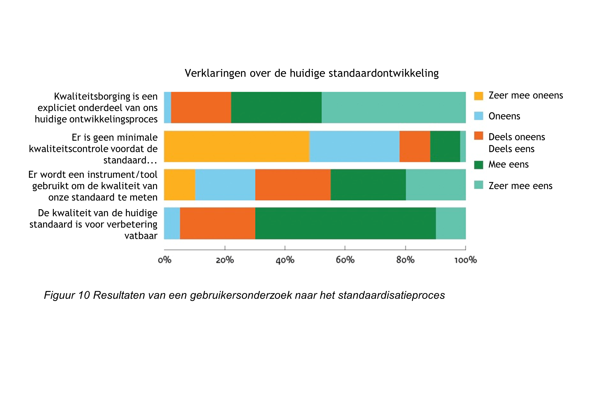
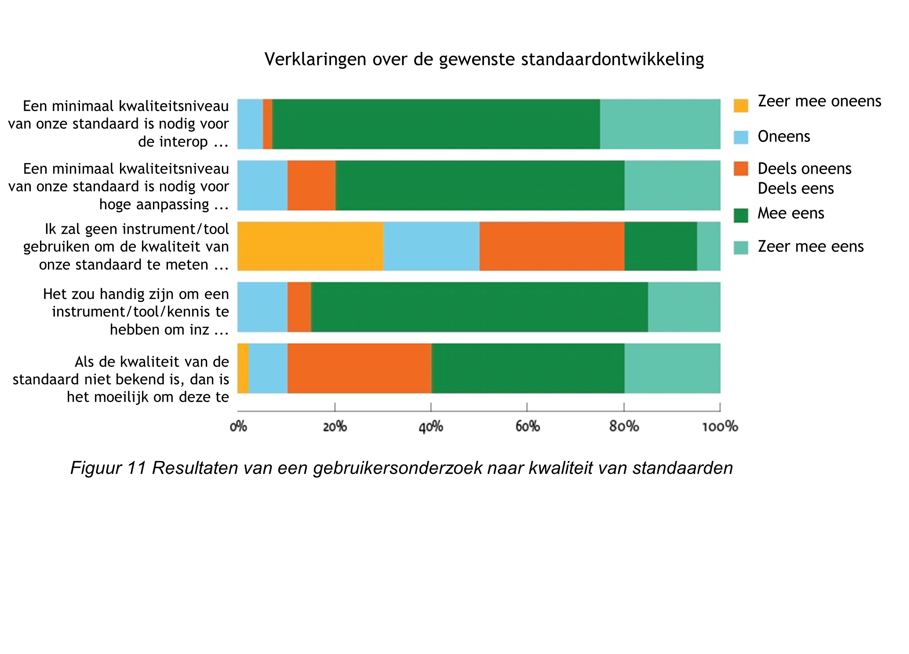

BOMOS Deel 2: De Verdieping, geeft zoals de titel al zegt een verdieping
van de onderwerpen uit het Beheer- en Ontwikkelmodel zoals in BOMOS Deel 1
is geïntroduceerd. De verdieping is gebaseerd op vele ervaringen,
best practices uit zowel de standaardisatiewereld en daarbuiten.
Status van dit document
Dit is een werkversie die op elk moment kan worden gewijzigd, verwijderd of vervangen door andere documenten. Het is geen door het TO goedgekeurde consultatieversie.
Documentbeheer
Datum
Versie
Auteur
Opmerkingen
2011
2.0
Erwin Folmer & Matthijs Punter
Toevoeging: De Best Practices
2024
3.0
Erwin Folmer, Gül Işik, Edwin Wisse, Wouter van den Berg
Herziene versie met samenvoegingen uit andere BOMOS varianten
In de BOMOS Verdieping worden de componenten van BOMOS behandeld. Naast de
lagen operationeel, tactisch en strategisch worden implementatie ondersteuning
en communicatie besproken.
De BOMOS documentatie is ondervedeeld in een aantal delen
(zie BOMOS structuur).
1.1 Doel
Het doel van deze publicatie is organisaties te helpen bij het
opzetten van het beheer van standaarden en de verbetering
daarvan. Vragen waar deze publicatie een antwoord op geeft zijn:
Hoe kunnen we de standaard organisatorisch goed (door)ontwikkelen en beheren?
Hoe kunnen we ontwikkeling en beheer zo inrichten, dat er sprake is van een open standaard?
Hoe kunnen we de adoptie van onze standaard bij gebruikers verbeteren?
Deze concrete vragen waren oorspronkelijk de aanleiding tot het
opstellen van het Beheer- en OntwikkelModel voor Open Standaarden
(BOMOS), met handreikingen (best practices) voor een open invulling
voor het beheer. Sindsdien wordt BOMOS in de praktijk gebruikt, en is
er bij de gebruikers behoefte ontstaan om meer kennis en ervaringen te
delen rond het beheer van standaarden. Andere vraagstukken, zoals het
verbeteren van interoperaliteit met standaarden, de transparantie en
beheersbaarheid van een standaard zijn toegevoegd. En ook wordt BOMOS
gebruikt als gemeenschappelijke taal in de standaardisatiewereld.
De kern van BOMOS is het Fundament. Dat bestaat uit een basis
beschrijving van het Beheer- en Ontwikkelmodel, en een verdere
verdieping op basis van literatuur of praktijkervaringen. Het Beheer-
en Ontwikkelmodel is in de basis een activiteitendiagram, daarnaast
zijn rollen gedefinieerd die relevant zijn bij het beheer- en
ontwikkelproces van standaarden.
Daarnaast biedt de _Verdieping (dit document) meer verdieping door het delen
van met name best practices uit de standaardisatiewereld.
Deel 1 en Deel 2 samen vormen de basis van BOMOS.
Naast deze basis zijn er uitbreidingen voor BOMOS gemaakt door de
community, die het toepassen van BOMOS in concrete situaties, soms met
een wat andere context, kunnen helpen. We noemen dit de BOMOS
Aanvullende Modules, ook wel een Body of Knowledge genoemd, welke
dynamisch zullen zijn in de tijd.
Als we het hebben over BOMOS, dan bedoelen we daarmee de basis zoals
in Deel 1 en Deel 2
beschreven. De aanvullende modules zijn wel duidelijk met BOMOS
verbonden, maar hebben een eigen governance wat kan resulteren in een
eigen naam, eigen doelgroep, eigen beheer, etc. In het
beheerproces van BOMOS
wordt ook beschreven welke eisen er gesteld worden voordat
iets opgenomen wordt als BOMOS aanvullende module.
Bent u vanuit een beleidsmakende of besturende rol alleen op
hoofdniveau geïnteresseerd, dan biedt het fundament (deel 1) voldoende
achtergrond en context. Bent u zelf actief in
standaardisatiecommunities dan kunt u naadloos doorgaan met het lezen
van deel 2: De verdieping met best practices, waarin meer achtergrond
en praktische tips rond standaardisatie zijn opgenomen.
Wilt u BOMOS gaan toepassen dan is het ook raadzaam om de aanvullende
modules te gaan bekijken. Hier kunt u voorbeelden en tools vinden die
kunnen helpen bij implementaties van open standaarden. Ook vindt u
hier varianten op BOMOS. Deze implementatieprofielen maken BOMOS
toepasbaar op meer dan (semantische) standaarden alleen.
2. Strategie
In deze sectie worden onderwerpen verdiept die gerelateerd zijn aan
strategische onderwerpen uit het Beheer- en Ontwikkelmodel.
2.1 De ontwikkel- en beheerorganisatie (Activiteit Governance)
Deze activiteit bevat o.a. het beleid uitzetten over de eigen
bestuurlijke organisatie (zoals de rechtsvorm); het huishoudelijke
reglement (de charter), maar ook allianties vormen met andere
organisaties. Het regelen van besluitvorming is cruciaal.
2.1.1 Organisatiestructuur
In het BOMOS activiteitendiagram zijn de verschillende activiteiten
opgesomd die kunnen plaatsvinden in een
standaardisatiegemeenschap. Onderstaande
figuur schetst een globale
organisatiestructuur hiervoor. Een belangrijk uitgangspunt is de
scheiding tussen inhoudelijke activiteiten in de
uitvoeringsorganisatie en de besluitvorming door het bestuur.
Het bestuur geeft opdracht aan een (not-for-profit)
uitvoeringsorganisatie die verantwoordelijk is voor een groot deel van
de beheertaken. Het bestuur verenigt de behoeften in dezen van zijn
achterban en heeft het mandaat namens dezen te besluiten over zaken
die de betreffende standaarden betreffen. Bestuur en
uitvoeringsorganisatie werken bij voorkeur met wederzijdse eenhoofdige
aanspreekpunten. Het bestuur is voornamelijk belast met de taak
'besluitvorming'. In de praktijk komt het bestuur een paar keer per
jaar bij elkaar, wat geen belemmering mag zijn voor de gewenste
besluitvorming. Het bestuur moet de uitvoeringsorganisatie voldoende
mandaat geven. In de praktijk zien we dat sommige besluiten ook
schriftelijk (e-mail) aan bestuursleden voorgelegd kunnen worden voor
goedkeuring, of dat de verantwoordelijkheid van bepaalde activiteiten
(bijv. communicatie) bij een enkel bestuurslid worden belegd. Dit
maakt het eenvoudiger om bilateraal overleg tussen de
uitvoeringsorganisatie en het verantwoordelijke bestuurslid te voeren
en ook besluiten tussentijds te nemen (en kan als alternatief dienen
voor de wederzijdse eenhoofdige aanspreekpunten).
De kern is dat duidelijk moet zijn vastgelegd welke besluiten in de
bestuursvergadering genomen dienen te worden; welke schriftelijk
(e-mail) voorgelegd kunnen worden, welke door een specifiek
bestuurslid genomen kunnen worden, en voor welke besluiten het mandaat
bij de uitvoeringsorganisatie ligt. In de praktijk worden vaak
jaarplannen gebruikt voor de opdrachtformulering van het bestuur aan
de uitvoeringsorganisatie. Op basis van rapportages over het jaarplan
legt de uitvoeringsorganisatie dan verantwoording af aan het
bestuur. Het jaarplan beschrijft welke taken uitgevoerd moeten worden;
welke werkgroepen er zijn of opgestart moeten worden, wat de doelen
voor de werkgroep zijn, etc. Het jaarplan wordt goedgekeurd door het
bestuur en is daarmee de opdracht voor de uitvoeringsorganisatie. Het
Beheer- en Ontwikkelmodel kan als kapstok dienen om de taken in het
jaarplan te benoemen. Het jaarplan maakt het ook goed mogelijk om
afspraken te maken over uit te besteden taken. Feitelijke
standaardontwikkeling vindt plaats in werkgroepen waarin de gebruikers
van de standaarden participeren. De werkgroepen worden door de
uitvoeringsorganisatie gecoördineerd. Veelal worden ook de
daadwerkelijke uitwerkingen opgesteld door de uitvoeringsorganisatie
op basis van discussies in de werkgroepen. De uitkomst van de
werkgroep, een nieuwe versie van een standaard, kan door het bestuur
vastgesteld worden en uitgebracht worden als nieuwe versie. De
besluitvorming, wie (bestuur/werkgroep) bepaalt wat, moet helder
geregeld zijn.
Bij voorkeur wordt onderscheid gemaakt tussen verschillende zwaartes
van wijzigingen in standaarden, zodat de lichtste wijzigingen door de
betreffende werkgroep of de uitvoeringsorganisatie zelf kunnen worden
afgehandeld en alleen de meest fundamentele wijzigingen betrokkenheid
van het bestuur vragen, tot aan een bestuursbesluit. Een werkgroep die
continu overruled wordt door het bestuur is niet werkbaar.
Eventueel kan een adviesorgaan opgericht worden om het bestuur met
gevraagd en ongevraagd advies ter zijde te staan. De uitkomst van een
werk- groep zal in dat geval als voorstel naar het adviesorgaan gaan
die daarover aan het bestuur zal adviseren. Het adviesorgaan bestaat
bij voorkeur uit onafhankelijke en onbetwiste deskundigen, en kan een
middel zijn om de onafhankelijkheid en expertise te versterken. Het is
van belang dat deze deskundigen gekozen worden op basis van kennis en
ervaring en niet op basis van belangen of vertegenwoordiging van een
organisatie; immers aan hen wordt enkel gevraagd om inhoudelijk
advies. De vertegenwoordiging van belangen is gevestigd in het
bestuur.
Een typische inhoudelijke categorische afbakening van werkgroepen
vindt plaats langs de volgende (gelaagde) lijnen:
Architectuur.
Processen/services.
Data/gegevens/berichten.
Technische standaard/transactiestandaard.
Beveiliging.
Een andere veel gebruikte afbakening is op basis van het
probleemdomein, bijvoorbeeld SETU heeft gewerkt met een tweetal
werkgroepen, te weten Bemiddeling en Verwerking. De werkgroep
Bemiddeling houdt zich bezig met de standaarden van offerteaanvraag
tot aan de plaatsing van een uitzendkracht, terwijl de werkgroep
Verwerking de standaarden van plaatsing tot aan factuur tot haar scope
rekent. In de praktijk zullen bij complexere standaarden bepaalde
categorieën werkgroepen (bijv. 'gegevens') weer onderverdeeld worden
in werkgroepen per probleemdomein (bijv. 'facturatie'), waarmee een
combinatie van beide indelingen wordt gerealiseerd.
Bijzondere aandacht verdienen de leveranciers. Dit is regelmatig een
heet hangijzer bij non-profit beheerorganisaties. Voor het welslagen
van een standaard (zonder juiste implementatie geen werkende
standaard') vaak cruciaal, maar leveranciers kunnen ook conflicterende
belangen hebben. In beginsel kunnen leveranciers gewoon als deelnemer
in de standaard acteren en rollen in de werkgroepen vervullen tot aan
deelname in het bestuur. De praktijk laat zien dat
softwareleveranciers veelal zeer nuttige bijdragen leveren in
werkgroepen waardoor het zeker aan te raden is om leveranciers toegang
tot de werkgroepen te verlenen. Vaak heerst er angst dat leveranciers
te nadrukkelijk een stempel gaan drukken op de standaard. Een aparte
leveranciersgroep zoals aangegeven in bovenstaande
figuur is dan een optie waarmee de
leveranciers enerzijds een platform wordt geboden terwijl ze
anderzijds buiten de werkgroepen en bestuur kunnen worden
gehouden. Softwareleveranciers zijn dan verenigd in een
leveranciersgroep, die de uitvoeringsorganisatie van advies kunnen
voorzien en overleg kunnen voeren met het adviesorgaan.
De besluitvorming binnen de werkgroep kan afhankelijk zijn van de
mogelijke deelname van leveranciers, en ook afhankelijk zijn van de
opstelling van de leveranciers. In de praktijk zal de keuze voor de
mate van invloed ook afhangen van de manier waarop de gemeenschap is
georganiseerd; indien de ontwikkeling van de standaard gedreven wordt
vanuit het belang van de softwareleveranciers dan zullen deze een
grotere invloed (willen) uitoefenen op 'hun' standaard. Wordt de
ontwikkeling gedreven vanuit een (overheids-)gebruikersbehoefte dan
zullen deze een grotere invloed (willen) uitoefenen.
In het figuur is een eenvoudige basisstructuur geschetst van bestuur,
uitvoeringsorganisatie en werkgroepen. Facultatief kan daar een
adviesorgaan en/of leveranciersgroep aan toegevoegd worden. Naast deze
geschetste mogelijkheden zijn er nog vele alternatieven, zowel
eenvoudiger als complexer. Welke structuur ook gekozen wordt, bij
voorkeur worden de verslagen van de verschillende gremia openbaar ter
beschikking gesteld.
2.1.2 Rollen en activiteiten.
In deel 1 zijn de rollen voor het ontwikkel- en beheerproces gedefinieerd,
en zijn ze gekoppeld aan de hoofdactiviteiten van BOMOS. Omgekeerd
kijken we er nu in meer detail naar. Onderstaande tabel geeft vanuit
de rollen aan in welke BOMOS activiteiten ze betrokken kunnen zijn;
dat laat ook zien dat een 1-op-1 koppeling tussen rol en activiteit
niet werkt.
Rol
BOMOS activiteit
Houder
Governance
Visie
Rechtenbeleid
Adoptie en erkennig (beleid)
Opleiding (beleid)
Kwaliteitsbeleid benchmarking(beleid)
Community (vaststellen)
Klachtenafhandeling
Implementatieondersteuning (beleid)
Financier
Financiën
Autorisator
Architectuur (vaststellen)
Initiatie (belsuitvorming)
Expert
Architectuur (uitvoeren en advisering)
Initiatie (advies)
Functioneel beheerder
Community (uitvoeren)
Kwaliteitsbeleid benchmarking (uitvoeren)
Initiatie (proces)
Wensen en eisen
Ontwikkeling
Uitvoering
Documentatie
Implementatieondersteuning (uitvoeren)
Technisch beheerder
Draagt bij aan operationeel
Distributeur
Promotie
Publicatie
Gebruiker
Geconsulteerd operationeel
Noot
2.1.3 Beheertaken uitvoering
Voor de invulling van ontwikkelen beheertaken in een
organisatiestructuur zijn verschillende mogelijkheden, variërend van
het beleggen bij een standaardisatieorganisatie tot het volledig zelf
invullen in een eigen organisatie. Het is geen doel op zich om voor
elke standaard een eigen beheren ontwikkelorganisatie op te tuigen. De
praktijk laat zien dat weinig bestaande organisaties zijn berekend op
het complete takenpakket, waardoor toch vele
standaardisatiecommunities hebben besloten een eigen organisatie op te
tuigen. Een deel van de taken wordt dan belegd bij de eigen
organisatie, maar een deel van de taken kan ook belegd worden bij
andere soorten organisaties. Onderstaande
figuur noemt hier (andere)
standaardisatieorganisaties, research-organisaties en
brancheorganisaties.
Het model maakt onderscheid tussen not-for-profit en profit
organisaties. Dit onderscheid is relevant in het kader van openheid
(zie sectie over
openheid). Indien
het beheer van een standaard is belegd bij een profit-organisatie kan
er geen sprake zijn van een open standaard! Dat wil niet zeggen dat
commerciële organisaties geen open standaarden kunnen ontwikkelen in
opdracht van een bestuur (organisatie), of na ontwikkeling doneren aan
een not-forprofit beheerorganisatie. Het ontwikkelen en beheren van
standaarden dient altijd not-for-profit te gebeuren, waarbij een
not-for profit organisatie wel het meest voor de hand liggend is.
Een eerste voor de hand liggende mogelijkheid is het beleggen van de
beheertaken bij formele standaardisatieorganisaties. De wereld is hier
wel veranderd in vergelijking met dertig jaar geleden toen het
merendeel van de standaarden door deze formele organisaties werd
ontwikkeld. In de huidige tijd wordt het merendeel van de standaarden
buiten de formele standaardisatieorganisaties ontwikkeld in allerlei
vormen van consortia, en dat aantal blijft groeien. Ook zien we weer
steeds meer complexe samenwerkingsverbanden tussen
standardisatie-organisaties ontstaan. Voor de semantische standaarden
speelt dit in extreme mate. Deels heeft dit te maken met de traagheid
van processen bij formele standaardisatieorganisaties, maar
voornamelijk het gebrek aan inhoudelijke kennis en expertise. Voor
semantische standaarden is domeinkennis essentieel.
Dit wil niet zeggen dat formele standaardisatieorganisaties geen
waarde hebben, integendeel. Op een aantal punten hebben ze potentieel
een belangrijke toegevoegde waarde. Bijvoorbeeld om de status van de
standaard te verhogen. Zo is NEN3610 ontwikkeld door Geonovum, maar
voor extra status ook uitgebracht als NEN-norm. Daarnaast is
secretariële ondersteuning voor werkgroepen ook een prima taak die
extern belegd kan worden.
De inhoudelijke kennis zal echter altijd zelf georganiseerd moeten
worden. Onderzoeksorganisaties, zoals universiteiten en instituten,
zijn een andere mogelijkheid om taken bij te beleggen. Voordeel is de
schat aan inhoudelijke kennis, maar mogelijk ook een gebrek aan
domeinkennis of kennis van het specifieke gebruik. Het
tegenovergestelde is het geval bij brancheorganisaties; voordeel hier
is de uitmuntende domeinkennis, maar nadeel is juist een gebrek aan
inhoudelijke standaardisatie/ICT kennis. Vaak zijn (semantische)
standaarden voor brancheorganisaties een ver van hun bed show. Het
onderwerp wordt al snel afgedaan als iets van techneuten, wat het in
de kern niet is; juist voor semantiek is domeinkennis van groot
belang.
Een eigen organisatie oprichten is een mogelijkheid, evenals
commerciële dienstverleners inschakelen. Dat laatste is wel op
gespannen voet met de openheidprincipes. De eigen organisatie is de
meest gekozen optie voor de kern van ontwikkelen beheertaken. Velen
domeinen kennen inmiddels eigen organisaties die kennis hebben van
zowel het domein als standaardisatie, bijvoorbeeld Geonovum,
EduStandaard, CROW, Informatiehuis Water, SETU, etc. Tot de kern van
hun werk behoren de strategische beheeractiviteiten zoals
geïdentificeerd in het model, en in grote mate ook de tactische en
operationele activiteiten. In deze situatie zijn bepaalde activiteiten
eenvoudig en zelfs beter om uit te besteden.
Een aantal suggesties:
Moduleontwikkeling;
Moduleontwikkeling is riskant om binnen de ontwikkel- en
beheerorganisatie te laten plaatsvinden. Daarmee wordt men ook
leverancier en concurrent van partijen in de gemeenschap. Beter is om
moduleontwikkeling te stimuleren buiten de ontwikkel- en
beheerorganisatie, mogelijk in de vorm van open source software. Dit
kan andere leveranciers ook bewegen om de standaard te gaan
ondersteunen en/of betrokken te raken bij de ontwikkeling daarvan. De
beste aanpak is afhankelijk van de kenmerken van de community.
Certificeren;
Essentieel bij certificeren is de onafhankelijkheid van de
certificerende instelling. Gebruikelijk is dat de ontwikkel- en
beheerorganisatie het toetsingskader opstelt, en vervolgens de
daadwerkelijke toetsing (op basis van het toetsingskader) uitbesteedt
aan externe partijen die zich specifiek richten op het toetsen en
certificeren.
Architectuur/Roadmapping/Benchmarking;
Ondersteuning en uitvoering hiervoor past uitstekend bij een
research-organisatie in brede zin (Naast kennisinstituten, ook
organisaties zoals CBS voor benchmarking). Met name voor benchmarking
geldt dat dit beter bij een externe organisatie belegd kan worden.
Communicatie;
Past vaak goed bij een brancheorganisatie die al een
communicatieapparaat heeft ingericht. Uiteraard moet er dan wel een
brancheorganisatie zijn die naadloos aansluit bij de standaard en die
bereid is de communicatie als belangrijke taak mee te
nemen. Communicatie rondom het beheer- en ontwikkelproces van een
standaard vraagt om specifieke kennis van dat beheer en heeft een
specifieke doelgroep zoals softwareleveranciers. Dit dient door een
brancheorganisatie onderkend te worden. Andere opties zijn
communicatieafdelingen van een andere partner organisatie.
Op hoofdniveau kunnen we concluderen dat er de keuze is om de
ontwikkel- en beheertaken te beleggen bij:
Bestaande organisaties.
Nieuwe organisaties.
Combinatie van beiden.
Het beleggen van alle taken bij een bestaande situatie klinkt ideaal,
maar er is geen organisatie die alleenstaand voor het complete
takenpakket is toegerust. Ook organisaties als NEN, Forum
Standaardisatie, etc. zijn daar niet op ingericht.
Daardoor is het in de praktijk vaak noodzakelijk om een nieuwe
organisatie op te richten, als er binnen het domein nog geen
organisatie bestaat gericht op standaardisatie. Optie 3, de combinatie
van beide, betekent dat bepaalde taken door deze (nieuwe) specifieke
domein standaardisatie organisatie worden opgepakt en andere taken
door ander type organisaties, conform de beschrijving in deze
paragraaf over het uitbesteden van taken.
2.1.4 De organisatievorm
Of het nu slechts een deel van de taken of alle taken door de nieuwe
organisatie uitgevoerd moeten gaan worden, de nieuwe organisatie moet
in beide gevallen opgericht worden waarvoor een rechtsvorm nodig
is. Nederland kent tal van organisatie rechtsvormen. Openheid van de
standaard is absoluut een essentieel uitgangspunt. De definitie van
openheid schrijft voor dat de (besluitvorming van de) standaard belegd
wordt bij een not-for-profit organisatie. Daarmee worden een groot
deel van de organisatievormen uitgesloten, en zijn slechts enkel voor
de hand liggen, te weten:
Stichting.
Vereniging.
Overheidsorganisatie (als verzamelterm).
De stichting: Een stichting is een rechtspersoon en wordt
opgericht bij notariële akte, door één of meerdere natuurlijke of
rechtspersonen. In de regel heeft een bestuur een voorzitter,
secretaris en penningmeester. Het bestuur is het enige verplichte
orgaan van een stichting. Daarnaast kan er nog een raad van toezicht
zijn, die toezicht houdt op het stichtingsbestuur. In tegenstelling
tot een vereniging heeft een stichting geen leden. Een stichting kan
wel donateurs hebben, maar die hebben geen zeggenschap. Een
stichting kan ook vrijwilligers hebben.
De vereniging: Een vereniging is een rechtspersoon voor de
Nederlandse wet. Een vereniging wordt meestal opgericht door bij de
notaris hiervan een akte op te maken. Dit is niet noodzakelijk, maar
zonder notaris heeft de vereniging beperkte rechtsbevoegdheid (de
bestuurders zijn hoofdelijk aansprakelijk). Wanneer een vereniging
bij de notaris opgericht is, zijn er ook statuten. Hierin staat
tenminste het doel van de vereniging, de verplichtingen van de
leden, het bijeenroepen van de algemene (leden)vergadering en het
benoemen/ontslaan van de bestuurders. Een vereniging heeft een doel
dat nagestreefd wordt. Dit doel mag niet het verdelen van winst
onder de leden zijn. Wat niet wil zeggen dat er geen winst gemaakt
mag worden, maar deze moet ingezet worden voor een bepaald doel
(zoals het doel van de vereniging, kennisdeling, verbetering van de
kwaliteit, liefdadigheid, etc.). Een vereniging heeft leden. Dit
zijn mensen die lid zijn van de vereniging omdat zij het doel
steunen. De leden betalen meestal contributie om de vereniging
draaiend te houden. Leden hebben invloed in het beleid van de
vereniging via een algemene (leden)vergadering (ALV). Zo'n
vergadering wordt minstens jaarlijks gehouden en elk lid is hiervoor
uitgenodigd en stemgerechtigd. De ALV heeft alle bevoegdheden die
niet door de wet of de statuten geregeld zijn en is dus het hoogste
orgaan van de vereniging.
De overheidsorganisatie: Er zijn verschillende vormen van
overheidsorganisaties, waardoor een korte bespreking onmogelijk
is. Het inzetten van een overheidsorganisatie zou op verschillende
manieren kunnen: één overheidsorganisatie als beheerorganisatie voor
alle aan de overheid gerelateerde standaarden, of per standaard één
overheidsorganisatie. Daarnaast kan een enkele overheidsorganisatie
de uitvoering van het beheer op zich nemen, maar kunnen meerdere
overheden zich ook verenigen. Dit kan bijvoorbeeld in een
vereniging. De keuze van de rechtsvorm dient weloverwogen te
gebeuren, waarbij ook zaken als de eenvoud van het opzetten moet
worden meegenomen. Bij een stichting speelt dat het mogelijk lastig
is voor overheidspartijen om aan een stichting deel te nemen, en dat
een stichting geen leden mag hebben. Bij een vereniging speelt de
grote macht van de ALV. Met een stichting en vereniging is het wel
eenvoudig om openheid aan te tonen. Bij zowel de stichting als de
vereniging zijn de statuten belangrijk; deze regelen in feite het
mandaat van de rollen in de organisatie.
Ondanks het feit dat een stichting geen leden kan hebben spreekt men
bij HL7 Nederland wel over leden, maar hanteert men strikt formeel de
term aangeslotenen. SETU kent geen leden, maar wel
participanten. Een samenwerkingsverband zonder rechtsvorm kan in de
praktijk goed werken voor het beheer maar kan in praktische zaken weer
nadelig zijn doordat het samenwerkingsverband als zodanig geen
bevoegdheden heeft tot het aangaan van overeenkomsten; hierbij zal
altijd één van de partners deze overeenkomst moeten aangaan. Mogelijke
nadelen die hieraan kleven zijn het verlies van identiteit; het
gebonden zijn aan regels en beperkingen van de partner; minder
slagvaardigheid etc. Het voordeel van een dergelijke organisatievorm
is dat deze eenvoudig is in te richten en op te heffen zonder
juridische consequenties. De organisatie-inrichting kan in enige mate
de vrijblijvendheid reduceren of op zijn minst expliciteren. De
vrijblijvendheid van de deelnemers in standaarden is zeker een serieus
aandachtspunt in het kader van een duurzaam toegepaste standaard.
Noot
2.1.5 Visie
Inhoudelijke visie ontwikkelen over de richting van de standaard in de
context: De plek op de horizon op de lange termijn. Een compacte
vertaling in bijvoorbeeld een factsheet van deze visie kan ook zeer
nuttig zijn in de communicatie rond de standaard en het bevorderen van
adoptie van de standaard. Ook moet er aandacht zijn voor innovatie;
veel organisaties gebruiken daar hulpmiddelen voor als een radar, of
specifiek een tech-radar; daarin worden innovatieve ontwikkeling
geplot op een radar op basis van tijd en impact. Dit soort
hulpmiddelen zijn ook hier van toepassing. De visie voor een standaard
is op zich niet anders dan de visie rond een bedrijf/product,
etc. Vandaar dat BOMOS hier geen specifieke invulling voor standaarden
aan geeft. De verdere detailering van de in de visie benoemde
innovatie onderwerpen zal veelal op tactisch niveau plaatsvinden,
bijvoorbeeld als onderdeel van Architectuur.
2.2 De kosten en de opbrengsten (Activiteit: Financiën)
Een financieel model voor de lange termijn hebben die opbrengsten
garandeert in overeenstemming met de behoefte is het voornaamste doel
van deze activiteit. Een standaard ontwikkelen en beheren kost
structureel geld. De hoeveelheid is sterk afhankelijk van de context
en dynamiek van de standaard en het is niet eenvoudig hier generieke
uitspraken over te doen. De eerste ontwikkelingen starten vaak met
projecten die beginnen met budgetten vanaf 30.000 euro tot vele malen
groter. Een eerste project levert ook niet direct een standaard op,
maar heeft in een werkgroep de mogelijkheden en scope van een
standaard onderzocht. Na de initiële ontwikkeling moet de standaard
structureel worden beheerd en doorontwikkeld. Er zijn cases bekend die
het beheer met budgetten in de order van 250.000 tot 900.000 euro (per
jaar) hebben georganiseerd. Tot op heden is hier weinig onderzoek naar
gedaan, met uitzondering van de Ethernet standaard: deze technische
standaard heeft $10 miljoen dollar gekost om te ontwikkelen. Andere
informatie bekend uit literatuur is dat de opbrengsten van verkoop van
ISO standaarden voor de helft voorziet in de kosten die ISO maakt in
de ontwikkeling en beheer van de ISO standaarden.
2.2.1 De baten van standaardisatie generiek
Er mogen dan weinig cijfers beschikbaar zijn maar er is voldoende
economisch onderzoek gedaan naar de vooren nadelen van
standaardisatie. Bijgaande tabel geeft een samenvatting (op basis van
Blind, K. (2004). The economics of standards; theory, evidence,
policy):
Positive effects
Negative effects
Compatability / interface
Network externalities
Monopoly
Avoiding Lock-ins
Increased variety of systems products
Variety reduction
Economies of scale
Reduced choice
Building focus and critical mass
Market concentration
Information standards
Facilitates trade
Regulatory capture
Reduced transaction costs
Voor semantische (domein) standaarden zijn met name relevant:
Positieve netwerkeffecten (wordt waardevoller met meer gebruikers).
Voorkomen van vendor lock-ins.
Toename variëteit in producten en diensten.
Schaalvoordeel.
Verlagen transactiekosten.
2.2.2 Kosten en opbrengsten
Wel is het mogelijk om te kijken naar de mogelijke kostenposten en
opbrengsten van het beheer van standaarden. De balans vat deze samen.
Debet
Credit
Ontwikkelkosten
Structureel begroting
Beheerkosten
Projectfinanciering
Communicatie
Lidmaatschapsgelden
Lidmaatschapskosten (+reiskosten)
Subsidie
Bedrijfsvoering (accountant)
Dienstverlening
Huisvesting
Licenties
Goodwill
Tooling (Licenties)
Financieringskosten
2.2.2.1 Debet
De voornaamste kosten zullen in principe gerelateerd zijn aan de
personeelskosten voor de primaire taak van de organisatie; de
ontwikkeling van nieuwe functionaliteit en het onderhouden van al
bestaande functionaliteit in de standaarden. De standaarden worden
gepubliceerd en mogelijk ook promotioneel onder de aandacht gebracht
waarvoor communicatiekosten gemaakt worden. Bij communicatiekosten kan
men naast de personeelskosten denken aan kosten voor het optuigen van
een communicatieplatform, het organiseren van bijeenkomsten, de
website en bijvoorbeeld drukwerk.
Vaak worden er specifieke software tools gebruikt zoals
datamodelleersoftware waarvoor licentiekosten betaald moeten
worden. Een andere potentiële kostenpost is de deelname aan verwante
standaardisatieorganisaties waarvoor lidmaatschapskosten worden
gerekend. In verschillende communities kan deze post variëren van 0
tot 15% en hoger, van het totale budget. Daarbij zijn dan vaak ook
reiskosten noodzakelijk voor de internationale
bijeenkomsten. Standaard bedrijfsvoeringkosten zijn ook van toepassing
zoals ICT voorzieningen (kantoorautomatisering), huisvesting en kosten
van de accountant voor de jaarrekening. Goodwill kan ook als
kostenpost worden beschouwd. Goodwill is dan de investeringen die men
in de omgeving moet plegen die niet direct bijdragen aan de standaard
zelf, zoals het deelnemen aan bijeenkomsten en accountmanagement. Vaak
is dit een investering om goodwill van anderen in return te krijgen
(als opbrengst). Tot slot zijn er de financieringskosten waarmee de
activiteiten worden bedoeld om inkomsten te genereren voor de
standaardisatieactiviteiten. Afhankelijk van het financieringsmodel
kunnen dat kosten zijn voor het verwerven van leden tot aan het
aanvragen van subsidies en dergelijke.
De verhoudingen kunnen door de tijd verschuiven, bijvoorbeeld in een
bepaalde fase van een standaard kan er pas op de plaats gemaakt worden
met de ontwikkeling en wordt de focus verlegd op de communicatie om de
adoptie van de standaard te bevorderen. In lijn hiermee zullen kosten
verschuiven van ontwikkeling naar communicatie.
2.2.2.2 Credit
Potentiële bronnen van inkomsten zijn bijvoorbeeld stakeholders die
geld uit de structurele begroting beschikbaar stellen voor de
standaard. Dat kan een ministerie zijn, maar even goed een branche of
belangenorganisatie. Op dezelfde manier kunnen deze organisaties ook
tijdelijk voor een bepaald doel (project)financiering beschikbaar
stellen. Daarnaast, aangezien standaarden een maatschappelijk en
economisch belang hebben, zijn er vaak mogelijkheden voor
subsidie. Deze subsidies zijn ook een mogelijke bron van inkomsten;
maar het verkrijgen daarvan kan omslachtig zijn, en er kunnen
beperkende voorwaarden zijn voor de inzet van het geld.
Structurele financieringsvormen verdienen de voorkeur boven tijdelijke
(project) financieringsvormen. Niemand zal namelijk een standaard
willen implementeren waarvan het onzeker is of die volgend jaar nog
wel beheerd wordt omdat de standaard werkt met aflopende
projectfinanciering. Daarnaast is structurele financiering een eis
voor opname op de pas-toe of leg-uit lijst met open standaarden van
het Forum Standaardisatie.
Andere potentiële opbrengsten zijn gerelateerd aan de standaard
zelf. Het is mogelijk om geld te vragen voor zowel het downloaden van
de documenten met specificaties, of het kan gekoppeld worden aan het
gebruik van de standaard. Beide vormen zijn niet bevorderlijk voor de
adoptie van de standaard. In de praktijk is veel weerstand tegen het
betalen voor het standaardisatiedocument, ongeacht het bedrag. Dit is
wel het huidige business model dat het NEN hanteert voor haar
normen. Ook in het kader van openheid (zie hoofdstuk 8) is het niet
verstandig om geld te vragen voor de documenten of het gebruik van de
standaard. Hoe beperkt het bedrag ook moge zijn, de standaarden worden
er op zijn minst minder open door. In de praktijk worden dan ook
regelmatig draft versies van deze standaarden gebruikt, omdat deze nog
gratis verspreid mogen worden.
Dienstverlening gerelateerd aan de standaard is een andere
mogelijkheid. Te denken valt daarbij aan consultancy over de standaard
of implementatieconsultancy. Diensten aanbieden bijvoorbeeld in de
vorm van een centrale berichtenmakelaar, of andere vormen van het
leveren van software/hardware zijn ook mogelijkheden. Tot slot zouden
er inkomsten gekoppeld kunnen worden aan dienstverlening op het gebied
van validatie en certificatie. Al deze vormen van dienstverlening
brengen wel een risico met zich mee. Naast een beheerorganisatie wordt
de organisatie ook een dienstverlener. Dat kan conflicterend zijn:
vooral door andere dienstverleners in de markt wordt dat opgevat als
oneerlijke concurrentie. Ook kan er een verwevenheid ontstaan tussen
het dienstverleningsproduct en de standaard zelf, indien blijkt dat
het eigen product een bepaald deel van de standaard niet goed
ondersteunt, kan ervoor gekozen worden de standaard te wijzigen in
plaats van te investeren in een product dat de standaard wel volledig
ondersteunt. Duidelijke scoping van welke dienstverlening de
beheerorganisatie op zich neemt en welke men overlaat aan de markt is
essentieel.
Naast de structurele financiering uit de begroting van een belangrijke
stakeholder is de meest voor de hand liggende inkomstenbron een
(lidmaatschaps)bijdrage van de stakeholders. Hiervoor kan op basis van
de trits 'belang-betaling-zeggenschap' de kosten verhaald worden bij
dezelfde partijen waar ook de baten liggen. Verschillende typen
organisaties kunnen verschillende bijdrage voor tarieven hebben
gerelateerd aan de potentiële opbrengsten van de stakeholder door het
gebruik van de standaard. Het spreekt voor zich dat een partij die een
wezenlijke bijdrage levert aan het beheer van een standaard daar ook
invloed op zal willen uitoefenen. Een risico daarbij is dat het belang
(en dus de zeggenschap) gelijkgeschakeld wordt met de financiële
bijdrage. Dit heeft ook consequenties voor de openheid.
Voor een volwassen standaard is het eenvoudiger om inkomsten te
genereren uit de standaard zelf of aanverwante diensten, maar daarbij
moet men voorzichtig te werk gaan om zo min mogelijk weerstand tegen
de standaard te creëren. Een standaard die zichzelf kan financieren
uit inkomsten, bijvoorbeeld door lidmaatschapsgeld en
licentie-inkomsten, kan nog steeds een open standaard zijn. Winst
maken is uit den boze. Om dit te voorkomen kan de organisatievorm een
belangrijke rol spelen. In de praktijk is het lastig om het free
riders (wel meeprofiteren zonder bijdrage) probleem goed te
adresseren.
2.2.3 Geschiktheid van opbrengsten bronnen
De vorige paragraaf schetste een beeld van potentiële opbrengsten. De
keuze van welke bronnen voor opbrengsten aangeboord worden is
situationeel, maar deze paragraaf tracht te ondersteunen bij het maken
van de keuzes voor geschikte bronnen van inkomsten.
De geschiktheid van een type opbrengst wordt algemeen geldend bepaald door:
Kosten en opbrengsten in evenwicht brengend.
Open en transparant.
Voldoende breed draagvlak.
In andere woorden, opbrengstbronnen die geen draagvlak hebben, niet
transparant zijn en de beheerorganisatie winstgevend maken zijn niet
geschikt.
Om geschikte bronnen van inkomsten te bepalen is een onderscheid in
verschillende situaties noodzakelijk:
Onderscheid tussen ontwikkeling en beheer.
Mate van volwassenheid: onderscheid tussen een bewezen standaard en een standaard in de beginfase van de levenscyclus.
Daarnaast hanteren we een drietal uitgangspunten:
Aansluiten bij open standaard (toegankelijk).
Adoptie niet belemmerend.
Waar het voordeel zit, vindt betaling plaats.
Op basis van deze uitgangspunten hebben licenties vanwege de beperkte
openheid, maar vooral omdat het adoptie belemmerend werkt, een
twijfelachtige status. Dit geldt zowel voor betalen voor het
specificatiedocument, als wel op betalen voor gebruik van de
standaard. Gezien de ongewenstheid wordt dit niet beschouwd als
potentiële opbrengsten bron voor een open standaard.
2.2.3.1 Ad 1. Onderscheid tussen ontwikkeling en beheer
Een onderscheid tussen initiële ontwikkeling en lopend beheer is
relevant omdat de eerste over het algemeen eenvoudiger te financieren
is dan de tweede. Opdrachtgevers zijn in de meeste gevallen wel
geneigd om een project te financieren rond een bepaald probleem waarin
een standaard de oplossing is. Als de standaard eenmaal ontwikkeld is
in het project, dan is het echter een stuk lastiger om de continue
financiering te vinden voor het beheer. Regelmatig haken de initiële
opdrachtgevers af, of op zijn minst is er veel overtuiging nodig voor
nut en noodzaak voor continue financiering. Uitleggen wat onder lopend
beheer valt is dan ook noodzakelijk: de standaard aanpassen aan de
veranderende omgeving. Bijvoorbeeld wetgeving is veranderd,
afhankelijke standaarden zijn veranderd, of innovaties op technisch
vlak. Lopend beheer kan wel leiden tot een nieuwe versie van een
standaard. (Overigens soms, bijvoorbeeld door het NEN, wordt beheer
nauwer gedefinieerd als het beschikbaar houden op een website, en kan
beheer niet leiden tot een nieuwe versie van een standaard)
Projectfinanciering en subsidie zijn op zich prima voor incidentele
zaken zoals de initiële ontwikkeling maar ook specifieke uitbreiding
van de standaard. Echter aangezien ze niet structureel zijn, is het
minder handig deze bronnen in te zetten voor het beheer van een
standaard. Structureel op de begroting (bijv. financiering door
overheid) is natuurlijk een ideaal scenario, maar niet voor elke
beheerorganisatie weggelegd. Bij het ontbreken hiervan wordt het
nagenoeg noodzakelijk om een lidmaatschapsmodel te bestuderen. De
gewenstheid van het lidmaatschapsmodel (soms ook contributie of
participanten genoemd aangezien een stichting geen leden mag hebben)
is afhankelijk van de voordelen die exclusief voor de leden gelden, en
het kostenaspect. Als iedereen kan participeren tegen gediversifieerde
tarieven dan is dit een acceptabel alternatief. Bijvoorbeeld op type
organisatie en omzet. Het lidmaatschapsgeld mag voor geen enkele
deelnemer een grote barrière vormen. Als er geen voordelen aan het
lidmaatschap verbonden zijn zal niemand geneigd zijn om deel te nemen.
Voordelen van een lidmaatschap liggen op een tweetal punten:
Zichtbaar maken dat organisatie de standaard
ondersteunt. (bijvoorbeeld logo op website, twee kanten uit: de
logo van het participerende organisatie op de website van de
standaard, en anderzijds dat de participerende organisatie het logo
van de standaard mag gebruiken op websites en flyers)
Deelname aan werkgroepen. Deelname aan werkgroepen is vaak zeer
waardevol aangezien het kennis geeft van de processen in de
branche, en de toekomst ontwikkeling van de standaard. Het geven
van voordelen aan lidmaatschap heeft consequenties voor de openheid
van de standaard; hier moet gezocht worden naar een juiste balans.
Sommige standaardisatieorganisaties maken in hun tarieven onderscheid
tussen sturende leden en deelnemende leden. Dit begint wel
twijfelachtig te zijn in relatie tot openheid. Ook wordt soms getracht
veel opbrengsten bij leveranciers te behalen maar dit kan de adoptie
van de standaard schaden.
2.2.3.2 Ad 2. Mate van volwassenheid
Als een standaard een grote mate van volwassenheid heeft, gekenmerkt
door brede adoptie van de standaard, dan is dienstverlening door de
beheerorganisatie ook een potentiële inkomstenbron. Te denken valt aan
verschillende vormen van dienstverlening:
certificering
opleiding
implementatieondersteuning
Certificering kan op verschillende
manieren ingezet worden, ook als middel om financiële opbrengsten te
genereren. In het kader van opleidingen kan bijvoorbeeld gedacht
worden aan het geven van opleidingsdagen tot aan complete cursussen
over de standaard. De marge op de cursus kan een inkomstenbron zijn,
helemaal gecombineerd met certificeren (het volgen van een opleiding
verplicht stellen voor het certificaat). Tot slot is
implementatie-ondersteuning een middel, dat kan in lichte mate door
het geven van betaalde adviezen over correct gebruik van de standaard,
tot aan het uitvoeren van complete implementatietrajecten. Hiermee
wordt de beheerorganisatie ook een marktpartij en daar kleven nadelen
aan.
Kort samengevat zal dienstverlening een inkomstenbron zijn die naar
mate de standaard volwassener wordt meer mogelijkheden gaat bieden
voor inkomsten. Een inkomstenbron die in de praktijk niet veel
voorkomt, maar voor de toekomst niet uitgesloten moet worden is de
donatie. Vooral structurele donaties zijn een prettige
financieringsvorm. Dit leidt tot het volgende model:
Overigens zijn de kosten van het beheren van een standaard ook niet
gelijk door de jaren heen. Sommige kostenposten kunnen flink
veranderen. Tegenwoordig zien we posten als tactisch beheer flink
stijgen, vooral door de relaties tussen de vele (internationale)
standaarden die afstemming vergen. Indien de adoptie van de standaard
succesvol is zal ook een post als implementatieondersteuning flink
kunnen stijgen.
2.2.4 Kostenbesparingen bij standaardisatie
Natuurlijk wordt de vraag gesteld of standaarden niet goedkoper kunnen
worden ontwikkelt en beheert. Dat is niet eenvoudig want veel
standaardisatie-initiatieven, in het bijzonder ook in
industriestandaardisatie, hebben de volgende kenmerken:
Minimale kostenoriëntatie.
Hobbyisme in de positieve zin van het woord.
Dat wil zeggen dat er veelal geen vet zit op de budgetten, en dat
standaardisatieorganisaties keuzes moet maken in wat wel en niet
uitvoerbaar is binnen het budget. Een relevante vraag is dan ook hoe
verstandig de minimale kostenoriëntatie is in relatie tot de kwaliteit
van de standaard en ook de adoptie van een standaard.
Een complexe standaard ontwikkelen kan miljoenen kosten, de
voornaamste kosten zijn niet voor de ontwikkelen beheerorganisatie,
maar voor de individuele deelnemers zoals:
De tijd van de experts (vrijwilligers).
De reis en vergaderkosten.
Memberships fees en kosten voor aanschaf andere standaarden.
Efficiëntie kan mogelijk behaald worden in de doorlooptijd van het
standaardisatie-proces. Tijd is geld en het ontwikkelproces voor
standaarden is regelmatig extreem tijdrovend. Een tijdsbesparing in
het ontwikkelproces kan veel kosten besparen. Voorbeeld hiervoor is de
pressure cooker in de afvalbranche, waarin in een week het fundament
voor de standaarden is gelegd.
De verschillende standaardisatieorganisaties per sector willen nog wel
eens het wiel opnieuw gaan uitvinden, meestal uit onwetendheid, wat
ook inefficiëntie tot gevolg heeft. Bijvoorbeeld de ontwikkelen
beheerprocessen kunnen waarschijnlijk gekopieerd worden van een andere
standaard in plaats van deze zelf te ontwikkelen. Daarnaast
bijvoorbeeld is de kern van een validatie-service hetzelfde voor elke
XML (of JSON) gebaseerde standaard; toch bouwen nog veel
beheerorganisaties hun eigen validatie-service. Algemeen kan gesteld
worden dat door middel van online tools de inzet van de vrijwilligers
efficiënter gemaakt worden. Onderstaande tabel geeft als samenvatting
een aantal suggesties weer om standaardisatie efficiënt in te vullen:
Onderdeel in standaardisatie proces:
Efficiënter te maken door:
Formeren handvest
Een specifiek en gedetailleerd handvest wat strak bepaald wat in/uit scope van het standaardisatie initiatief is.
Opzetten ontwikkel en beheerprocessen
Hergebruik van beschrijvingen (bv. gebruik van procedure document van andere standaardisatieorganisaties)
Inrichting beheerorganisatie
Hergebruik van (validatie) tools, maar ook tools om standaarden te maken
Voorbereiding
Optimale en strakke planning met verdeling van de werkzaamheden. Ook duidelijke wensen en eisen aan de oplossing definiëren om “scope creep” te voorkomen. (“scope creep” is het fenomeen dat tijdens het ontwikkelproces de scope van de standaard geleidelijk verschuift.) Daarnaast al in een vroeg stadium de bronnen (andere standaarden) die potentieel hergebruikt kunnen worden identificeren.
Ontwikkelproces
Innovatieve ontwikkelaanpakken voor standaarden (bv. gebruik van een pressure cooker), maar ook tools zoals een wiki om gezamenlijk aan te werken.
Review van de standaard
Efficiënt review proces en gebruik van templates voor het verzamelen van opmerkingen.
Vaststellen van de standaard
Online tools voor het stemmen.
Besparingen door middel van innovatieve aanpakken in het
ontwikkelproces kunnen ook een valkuil zijn. Een grote kostenpost zijn
de face-to-face meetings. Besparingen hierop zijn de vele online
mogelijkheden zoals online videoconferencing, fora, mailinglijsten,
etc. Met name in de open source gemeenschap is de mening dat
face-to-face meetings overbodig zijn en dat asynchrone communicatie
voldoende moet zijn, ook om wereldwijd met alle tijdzones te kunnen
opereren. Echter open source software ontwikkelen is niet gelijk aan
open standaard ontwikkeling. Hetzelfde proces hanteren is dus een
valkuil. Bij standaarden gaat het om complexe materie en
functionaliteit, waarbij wederzijds begrip en ook vertrouwen van groot
belang zijn. Directe communicatie, face-to-face, is belangrijk. In de
COVID pandemie zijn de online ontwikkelingen snel gegaan, en ook
geaccepteerd geraakt; uiteraard is het wel verstandig om hiervan te
profiteren. Efficiëntie betekent de juiste mate van face-to-face,
online meetings, en ander gebruik van online tools voor communicatie
en het afhandelen van de technische zaken. In andere woorden:
innovatieve ontwikkelaanpakken zoals de pressure cooker en gebruik
van het Web kunnen zeker
besparingen opleveren, maar zullen kostbare face-to-face meetings niet
vervangen.
2.2.5 De business case
De business case van standaardisatie is een veel gehoord
onderwerp. Voordat het besluit tot investering genomen kan worden is
eerst inzicht in de business case noodzakelijk. Eigenlijk gaat het om
verschillende business cases:
De business case van de standaard (oftewel de keten)
De business case van een individuele organisatie om de standaard te implementeren
De business case van een nieuwe versie van een standaard.
De eerste business case is voor de overheid interessant om beleid rond
standaardisatie op af te stemmen. Vaak onderdeel van beleid rond een
groter maatschappelijk of economische vraagstuk. Uiteraard is deze
business case ook relevant voor de standaardisatie-organisatie, maar
een individuele organisatie kan er niet veel mee. Deze heeft een
andere business case nodig, specifiek voor haar rol in de keten.
Kwantitatieve onderzoeken naar de business case van standaardisatie
zijn lastig uit te voeren en leiden niet altijd tot nuttige
inzichten. Dit neemt niet weg dat kwalitatief onderzoek wel relevant
kan zijn en wel goed uitvoerbaar is. Alleen al het inzicht te weten
bij welke partijen de voordelen zitten en het identificeren van de
organisaties die geen voordelen hebben is waardevol. Daarnaast is het
waardevol om te weten welke partijen relatief meer voordeel hebben dan
andere partijen ook al hebben ze dezelfde rol. Zo kan bijvoorbeeld de
marktleider minder voordeel hebben ten opzichte van de runner-up, net
zoals een organisatie die een moderne back-office heeft mogelijk meer
voordeel kan hebben. Op basis van deze inzichten kan potentieel het
gedrag van de deelnemers in de werkgroepen worden verklaard. De
kwantitatieve business case is lastig omdat standaarden geen doel zijn
maar een middel om het doel van interoperabiliteit te behalen. De
business case gaat dan feitelijk ook om interoperabiliteit. In lijn
hiermee zijn er in de praktijk vaak geen projecten die als doel hebben
een standaard te implementeren, maar juist projecten die
interoperabiliteit voor bijvoorbeeld inkoop realiseren. Dit betekent
dat de business case van het project breder is dan de
standaard. Bijvoorbeeld regelmatig zien we projecten die van een
papieren uitwisseling overstappen naar een digitale gestandaardiseerde
uitwisseling waarbij ook procesoptimalisatie gaat plaatsvinden. De
standaard is daarmee een (belangrijk) onderdeel geworden van een veel
groter project. Het is daarbij lastig toe te wijzen welke opbrengsten
en kosten aan de standaard toekomen binnen het grotere
project. Daarbij is er ook sprake van kwalitatieve baten, die
vervolgens kwantitatief uitgedrukt moeten worden.
Bijzondere aandacht verdient ook business case type 3: Vervangende
standaard/ nieuwe versie. Hiervoor is het relatief eenvoudig de
business case op te stellen, maar deze is in de praktijk niet positief
te krijgen. Bijvoorbeeld rond e-facturatie: Als een organisatie al
e-factureert met bijvoorbeeld UBL of SETU, dan is de business case
naar een nieuwe standaard (UN/CEFACT Cross Industry Invoice) niet of
nauwelijks positief te krijgen. Daarom zullen er altijd een zeer lange
tijd ook nog oude standaarden (bijv. EDI) in gebruik zien, omdat er
geen positieve business case voor de nieuwe/andere standaard is,
zolang er geen interoperabiliteitsprobleem is. Eén van wereldwijd
meest succesvolle standaard, RosettaNet,
illustreert dit ook: ondanks dat deze standaard al jaren een XML
versie heeft ontwikkeld is er nauwelijks migratie vanuit de oude EDI
versie, en lang een lage adoptie van de XML versie heeft gehad.
2.2.6 Het opstellen van een business case
Ondanks de geschetste moeilijkheden en de verschillende pogingen die
al gedaan zijn, proberen we toch een aanpak te schetsen die inzicht
kan bieden in de business case. De aanpak in deze paragraaf beschreven
is gebruikt om een business case voor een semantische standaard in de
juweliersbranche op te stellen: Stappenplan:
Beschrijf huidige situaties en toekomstscenario's en identificeer stakeholders.
Bepaal de kosten en baten in de keten op basis van het raamwerk.
Verdeel de kosten en baten naar verschillende stakeholders (Probeer de kosten en baten per stakeholder te kwantificeren).
De eerste drie stappen worden toegelicht:
2.2.6.1 Stap 1 - Beschrijf huidige situaties en toekomstscenario's en identificeer stakeholders.
De eerste stap begint met een analyse van de stakeholders; wat zijn de
partijen die een relatie hebben tot het interoperabiliteitsprobleem
waarin een mogelijke standaard een oplossing kan bieden. Voor het
identificeren van de stakeholders, kan de NEN stakeholderanalyse
gebruikt worden (zie sectie Werkgroep en
stakeholders).
Vervolgens wordt de huidige situatie geanalyseerd; wat zijn de
uitgangsposities van waaruit de primaire stakeholders moeten
vertrekken. Daarbij dient ook het beeld van het toekomstscenario met
standaard helder te zijn, zodat de migratiepaden van de huidige
situatie naar de toekomstscenario's duidelijk zijn.
Het figuur geeft dit weer voor de primaire stakeholder de juwelier in dit voorbeeld. Uiteraard is het bij de implementatie de bedoeling om ervoor te zorgen dat zoveel mogelijk partijen in toekomstscenario 1 of 2 terecht komen en de standaard gaan gebruiken.
2.2.6.2 Stap 2 - Bepaal de kosten en baten in de keten op basis van het raamwerk.
In stap 2 wordt een kosten-baten model opgesteld. Wat zijn in
generieke zin de eenmalige investeringen, de operationele kosten en de
baten die van toepassing zijn op de standaard. Voor vele standaarden
zal dat redelijk gelijk zijn, vandaar dat gestart kan worden met het
model uit de juweliersbranche, en deze vervolgens aan te passen waar
nodig. Het model uit de juweliersbranche is hieronder weergegeven.
2.2.6.3 Stap 3- Verdeel de kosten en baten naar verschillende stakeholders.
De verschillende kosten en baten zullen niet op alle stakeholders
betrekking hebben, en ook de mate zal verschillen. In deze stap worden
de kosten en baten uit het raamwerk van stap 2 een niveau dieper
gespecificeerd, en toegekend aan de stakeholder met een gedefinieerde
relatie.
Op basis van dit eenvoudige stappenplan kan toch op een eenvoudige
manier inzichten in de business case van een standaard ontstaan,
zonder blind te focussen op de getallen. Uiteraard kan na stap 3 een
poging gedaan worden om de geïdentificeerde kosten en baten uit te
gaan drukken in geld.
3. Tactiek
In deze sectie worden onderwerpen verdiept die gerelateerd zijn aan tactische onderwerpen uit het Beheer- en Ontwikkelmodel.
3.1 De open invulling van een standaard (Activiteit Community)
Openheid is een belangrijk aspect van een duurzame standaard. Maar wat
betekent dat voor de beheerorganisatie? Dat kunnen we nader
beschouwen door naar een definitie of model van een open standaard te
kijken. Echter door de jaren heen is er veel discussie geweest rond de
definitie van openheid. Veelal richt de discussie zich op de
beschikbaarheid (gratis of nominale bedrag voor aanschaf),
gebruiksrechten (het wel/niet toestaan van Intellectual Property
Rights (IPR)/Royalty Free en standaardisatieproces (wel/niet gratis
participatie). Het model van Krechmer geeft een neutraal en brede blik
op openheid, vandaar dat we het in BOMOS hanteren.
3.1.1 Krechmer's open standaarden model: '10 requirements'
Ken Krechmer heeft een model ontwikkeld waarmee de openheid concreet
gemaakt wordt en waarmee hij standaardisatieorganisaties kan
vergelijken. In het model maakt hij onderscheid tussen de
verschillende openheidaspecten (requirements) en de verschillende
gezichtspunten op standaarden. Als gezichtspunten/rollen hanteert hij
de ontwikkelaar van de standaard, de implementator van de standaard in
een product, en de gebruiker van de standaard (product waarin de
standaard is verwerkt). Niet elk openheidsaspect is voor elke rol even
interessant, zoals het model ook laat zien:
Eisen
Ontwikkelaar
Implementator
Gebruiker
1
Open meeting
X
2
Consensus
X
3
Due process
X
4
One world
X
X
X
5
Open IPR
X
X
X
6
Open change
X
X
X
7
Open documents
X
X
8
Open interface
X
X
9
Open access
X
X
10
Ongoing support
X
Deze 10 criteria voor open standaarden betekenen het volgende voor de beheerorganisatie:
Open Meeting betekent dat iedereen mag meedoen in het
standaardisatie proces. Geen stakeholders uitsluiten. Ook het
mogelijk maken om tegen lage kosten op een per-meeting basis deel
te nemen is belangrijk. Dit maakt het ook voor studenten of voor
MKB bedrijven mogelijk om aan te sluiten. Meetings moeten duidelijk
aangekondigd worden en er moeten zo min mogelijk barrières zijn
voor stakeholders om deel te nemen. Een ontwikkelen
beheerorganisatie moet zuinig zijn op stakeholders die willen
participeren. In veel gevallen is het niet eenvoudig om voldoende
stakeholders op de been te krijgen die actief willen
participeren. Dus in plaats van drempels is stimulering meer op
zijn plaats. De valkuil is om meetings alleen open te stellen voor
slechts een bepaalde groep van (betalende) stakeholders.
Consensus gaat over de besluitvorming binnen de organisatie. Is
er een (groep van) organisatie(s) die dominant zijn? In principe
zou iedere participant gelijke rechten moeten hebben en kunnen
meebeslissen. De valkuil is om een dominante groep (bijv. het
bestuur/partijen die financieel fors bijdragen) te hebben die
volledige controle heeft.
Due Process gaat over de processen hoe stemrondes zijn
georganiseerd en de processen voor verzoeken tot heroverweging (appel)
van beslissingen. Er moeten procedures zijn voor klachten, en die
procedures moeten inzichtelijk zijn. Hetzelfde geldt voor de
procedures voor besluitvorming, en in het bijzonder het proces om
mogelijke patstellingen te doorbreken. Valkuil is om dit niet
georganiseerd te hebben.
One World betekent dat idealiter voor hetzelfde doel er één
standaard op de wereld wordt gebruikt, ook ter voorkoming van
handelsbarrières. Dit wil uiteraard niet zeggen dat het voor een
specifiek doel of context niet mogelijk zou zijn om een nieuwe
standaard neer te zetten. Maar het betekent ook dat er geen regionale
of nationale standaard gecreeërd dient te worden als een wereldwijde
standaard voldoet. In algemene termen betekent One World ook dat de
standaardisatieorganisatie niet verkokert, met oogkleppen op, een
standaard ontwikkelt zonder wetenschap van andere
standaarden/initiatieven. De valkuil is om als
standaardisatieorganisatie oogkleppen op te hebben, en alleen bezig te
zijn met eigen standaarden terwijl er goede standaarden beschikbaar
zijn, eventueel als halffabricaat. Open betekent hier open in relatie
met andere standaardisatieorganisaties om geen overlappende maar
aansluitende zaken te ontwikkelen. Een andere valkuil is een te
beperkte scope te kiezen voor de te ontwikkelen of beheren standaard;
bijvoorbeeld nationaal in plaats van wereldwijd.
Open IPR (intellectuele eigendomsrechten) is het aspect waar de
meeste discussie over is geweest, waarbij met name 'royalty free'
en 'onherroepelijk' de kernwoorden uit de definitie van open
zijn. Standaardisatieorganisaties en leveranciers hebben lang
getracht om 'RAND' (Reasonable and Non-Discriminatory) op te nemen
in de definitie van openheid. Deze standaardisatieorganisaties
voldoen dan ook vaak op dit punt niet aan de definitie van open,
wat betekent dat vele standaarden die in de perceptie open zijn,
volgens de definitie niet open zijn op dit punt. De definitie van
open standaard laat aan duidelijkheid niks te wensen over, en
voorkomt discussie over RAND, bijvoorbeeld wat is reasonable? Dat
leidt tot veel discussie. Royalty free en onherroepelijk
beschikbaar zou de standaard moeten zijn. De valkuil is om dit niet
geregeld te hebben, wat bij veel semantische
standaardisatieorganisaties het geval is. De intenties zijn goed
(open), maar door het niet expliciet te regelen kan dat tot
problemen leiden in de toekomst. Ook is vaak niks geregeld over de
rechten van de bijdrage die 'vrijwilligers' vanuit externe partijen
leveren in werkgroepen van de standaard. Dit is een potentieel
gevaar voor de duurzaamheid van de standaard.
Open Change: Als een leverancier alleen gedwongen wordt om de
standaard open beschikbaar te stellen, maar zelf op elk moment
wijzigingen kan doorvoeren, zullen de voordelen van standaarden
nooit bereikt worden en behoudt de ene leverancier zijn macht. Een
open manier van wijzigingen in de standaard doorvoeren is van groot
belang, maar krijgt tot op heden weinig
aandacht. Standaardisatieorganisaties die niet voldoen aan open
meeting, consensus en due process kunnen per definitie niet voldoen
aan open change. Een open invulling kan geschieden door het
beschrijven van wijzigingsprocessen waarbij geen partij een
bijzondere status heeft in de besluitvorming. De valkuil is om het
proces van wijzigingen niet open in te richten, helemaal omdat er
vaak geen aandacht voor is.
Open Documents betekent dat alle documenten open beschikbaar
zijn. Dat betekent dat niet alleen de standaarden zelf maar ook
work in progress beschikbaar moet zijn, notulen van meetings,
e.d. Daarmee kunnen gebruikers van de standaard de complete
achtergrond doorgronden. De valkuil is om alleen de standaarden
zelf open beschikbaar te stellen.
Open Interface is vooral relevant voor technische standaarden,
en heeft betrekking op het ruimte laten voor leveranciers voor
gesloten uitbreidingen, en daarnaast ook de ruimte bieden voor
backward en forward compatibiliteit. Valkuil: het niet adresseren
van backward compabiliteit en de ruimte bieden voor tijdelijke
uitbreidingen (forward compatibiliteit).
Open Access: Eindgebruikers vertrouwen er vaak op dat hun
leverancier(s) de standaarden correct hebben geïmplementeerd. Om
'Open Access' te bereiken moet het mogelijk te zijn om de
implementatie van de standaard te testen (conformiteit); dat kan
door middel van conformiteittesten (testprotocollen) tot aan
officiële certificatie. Een andere mogelijkheid zijn zogenoemde
plugfesten waarbij de interoperabiliteit tussen verschillende
implementaties van een standaard inzichtelijk wordt gemaakt. De
valkuil is om hier van uitstel naar afstel te gaan. De standaarden
moeten een bepaalde mate van volwassenheid hebben wil dit zinvol
zijn. Daarom wordt het vaak uitgesteld. En van uitstel volgt
afstel. Een open invulling betekent ook het inzichtelijk (open)
maken van het gebruiken van de standaard in implementaties,
bijvoorbeeld door het publiceren van implementatieoverzichten.
Ongoing Support is het leveren van ondersteuning op de
standaard gedurende de levenscyclus. De valkuil is het stoppen met
het leveren van ondersteuning als de interesse van leveranciers
afneemt. Een open invulling betekent op zijn minst dat de
levenscyclus van een standaard beschreven is waarmee gebruikers
garantie krijgen over de ondersteuning op de standaard. Idealiter
dient de ondersteuning pas af te lopen als er geen interesse meer
is in de standaard bij de eindgebruiker.
Veel van de huidige discussies over openheid gaan over slechts twee
aspecten van openheid te weten, 'One World' en vooral 'Open IPR',
terwijl de andere aspecten daardoor onderbelicht raken. Alle punten
helpen bij het inrichten van maximaal open
standaardisatieorganisatie. Tot op heden is er geen organisatie bekend
die op alle punten volledig open is. Volledig open op al deze punten
is een utopie, maar deze punten zijn wel aandachtspunten, en kunnen
het denkproces helpen om standaardisatie meer open te
krijgen. Overigens is het goed te weten dat de formele
standaardisatieorganisaties in veel gevallen niet (of slechts ten
dele) voldoen aan de aspecten 6-10.
3.1.2 Concrete tips voor openheid
Op basis van het voorgaande zijn er een aantal concrete tips op te
stellen: Maak besluitvorming open door:
Publiceren van de notulen van verschillende gremia.
Consensus besluitvorming.
Geen partijen uitsluiten bij bijeenkomsten.
Een website met daarop alle documenten (ook drafts) kosteloos beschikbaar.
Een duidelijke wijzigingsprocedure.
Het testbaar maken van de standaard door middel van testprocedures, validatie, certificatie en/of plugfests.
Regel structurele financiering.
Veel aandacht besteden aan de relatie met andere standaarden in de omgeving.
De rechten expliciet hebben vastgelegd; de intellectuele eigendomsrechten op de standaarden, copyrights op documenten, de bijdrage van personen in werkgroepen en in de totstandkoming van de standaarden. Versiebeheer vastleggen: hoe om te gaan met backward en forward compatabiliteit, en daarnaast de ondersteuning vastleggen op basis van de levenscyclus van een standaard.
Het vastleggen in een document van de ontwikkelen beheeraspecten.
3.1.3 Het toetsbaar maken van het model
Het model van Krechmer is een ideaal startpunt maar kan aangevuld
worden om meer praktische handvatten te bieden. Daartoe hebben we de
criteria verder uitgewerkt in variabelen per criteria. Deze variabelen
zijn beter te relateren aan de praktijksituatie. Tot slot kunnen er
scores toegekend worden per variabelen; dat maakt openheid tussen
standaarden ook vergelijkbaar. Theoretisch gezien zou er dan
bijvoorbeeld een minimale score kunnen worden gedefinieerd willen we
spreken over een open standaard. Echter dat doet geen recht aan het
feit dat bepaalde variabelen belangrijker zijn dan andere variabelen.
Het model op de volgende pagina is een invulling van de 10 criteria
van Krechmer en is een hulpmiddel om de beheer-activiteiten op een
open manier in te vullen.
Principe
Criteria
Variable
Toelichting
Score
1
Open meeting
Iedereen kan partiperen in het standaardisatieproces
1
Toegangsprijs
Is er een toegangsprijs voor standaardisatiebijeenkomsten? Is dat betaalbaar voor de verschillende deelnemers? Gratis (2 punten), Betaalbaar, laag of gediversifieerd tarief (1 punt) of kostbaar (0 punten)
0/1/2
2
Bereikbare vergaderlocaties
Vergaderlocaties worden zodanig gekozen dat reiskosten voor iedereen geminimaliseerd zijn
0/1/2
3
Open voor iedereen
Elke organisatie of persoon kan in principe participeren in de ontwikkeling van de standaard
0/1/2
4
Open kalender
Is de vergaderagenda online beschikbaar en actueel? Ruim van tevoren?
0/1/2
2
Consensus
De basis van een standaard is consensus
1
Open proces
Het proces van standaardisatie is openbaar zodat er voor iedereen duidelijk is hoe zaken besloten zijn
0/1/2
2
Procedure bij geen consensus
Er is een procedure voor het geval geen consensus bereikt kan worden
0/1/2
3
Gelijke stem
Alle stakeholders hebben in de besluitvorming een even grote stem. Dit voorkomt de aanwezigheid van dominante stakeholders.
0/1/2
4
Externe review
De resultaten van de standaardisatie-bijeenkomsten worden gepubliceerd waardoor externe organisaties en personen de mogelijkheid hebben om resultaten te reviewen. Dit ook om kwaliteit te verhogen.
0/1/2
3
Eerlijk standaardisatieproces
Vastgelegde procedures om gedurende het standaardisatieproces consensus te garanderen
1
Open agenda
Voor elke stakeholder is het mogelijk om agendapunten aan te leveren
0/1/2
2
Procesmanagement
Is er sprake van een reglement waarin de procedures en protocollen van het standaardisatieproces zijn vastgelegd (manier van stemmen, beroepsmogelijkheden etc.)
0/1/2
3
Onafhankelijke voorzitter
Worden de standaardisatiebijeenkomsten door een onafhankelijk persoon voorgezeten zodat de belangen van alle stakeholders de juiste aandacht krijgen?
0/1/2
4
Mogelijkheid tot beroep
Wanneer men ontevreden is over de besluitvorming in een standaardisatiebijeenkomst is er de mogelijkheid om een klacht in te dienen bij een hoger orgaan? Dit orgaan bekijkt de situatie en heeft de bevoegdheid om in te grijpen
0/1/2
4
Open IPR
Intellectuele eigendomsrechten m.b.t. standaard zijn zo open mogelijk
1
Rechten gepubliceerd
De manier waarop juridische zaken rondom de standaard zijn geregeld dient openbaar te zijn
0/1/2
2
Juridische belemmeringen
Hoe minder juridische belemmeringenvoor het gebruik van de standaard, hoe opener de standaard is
0/1/2
3
Wederzijdse licenties
Op aanpassingen van de standaard rusten automatisch dezelfde licenties als op het origineel, zodat aangepaste standaarden niet voorzien kunnen worden van allerlei juridische belemmeringen
0/1/2
5
One world
De standaard kan voor hetzelfde doel wereldwijd gebruikt worden
1
Harmonisatie
In hoeverre sluit de standaard aan op gerelateerde standaarden?
0/1/2
2
Lokatie onafhankelijkheid
In hoeverre bevat de standaard elementen die uniek zijn voor een specifieke geografische lokatie? Een open standaard dient zo min mogelijk van dit soort elementen te bevatten zodat de toepasbaarheid groter wordt
0/1/2
6
Open documenten
Documenten m.b.t. de standaard zijn openbaar
1
Open concepten
De concept-documenten met betrekking tot de standaard zijn openbaar
0/1/2
2
Open specificaties
De specificaties van de standaard zijn openbaar.
0/1/2
3
Open notulen
De notulen van bijeenkomsten zijn openbaar.
0/1/2
4
Open procedures
De procedures (zoals Concensus en Eerlijk standaardisatieproces) zijn openbaar.
0/1/2
5
Open distributie
Het distribueren van de hierboven beschreven documenten staat iedereen vrij.
0/1/2
7
Open interface
Compatibiliteit en conformiteit leiden tot interoperabiliteit.
1
Compatibiliteit
Verschillende versies van de standaard zijn – voor zover mogelijk - compatibel met elkaar, d.w.z. verschillende versies zijn op basaal niveau interoperabel.
0/1/2
2
Implementaties conform specificatie
De standaard beschrijft expliciet wat conformiteit aan de standaard betekent en aan welke criteria voldaan moeten worden. Zodat transparant kan worden welke implementaties conform de standaard zijn. Betekent twee implementaties conform de standaard ook interoperabiliteit?
0/1/2
8
Open access
Er zijn methodes om conformiteit te testen en te certificeren.
1
Validatie testen
Er kan getest worden of een standaard daadwerkelijk op een juiste manier is geïmplementeerd. Een laagdrempelige testmogelijkheid.
0/1/2
2
Conformiteit valideren
Een toets kan plaats vinden op conformiteit, waarbij validatie een onderdeel vormt. Het resultaat wordt vastgelegd in een document.
0/1/2
3
Conformiteit certificatie
Een toets die plaats vindt op basis van conformiditeitsregels, waarbij het resultaat openbaar gepubliceerd wordt en kan leiden tot een certificaat.
0/1/2
4
Disability support
De standaard houdt rekening met mensen die een handicap hebben, en voldoet aan richtlijnen hiervoor.
0/1/2
9
On-going support
De standaard wordt ondersteund totdat er geen gebruikers meer zijn
1
Ondersteuning gedurende de hele levenscyclus van de standaard.
Gedurende de levenscyclus van de standaard (van begin tot eind) is er ondersteuning voor gebruikers vanuit de standaardisatieorganisatie. Met name ook aan het einde van de cyclus wanneer er wellicht nog maar een klein aantal gebruikers is en de neiging om geen ondersteuning te bieden groot is.
0/1/2
10
Open change
Wijzigingen in de standaard op basis van openheid
1
Uitbrengen nieuwe versie
Wie bepaalt wanneer aan een nieuwe versie van een standaard gewerkt gaat worden, en wanneer deze uitgebracht gaat worden? Ook hiervoor geldt consensus
0/1/2
2
Inbrengen wijzigingsverzoeken
Wie kunnen er wijzigingsverzoeken indienen, en worden die eerlijk (op basis van een vastgestelde procedure) behandeld? Hiervoor zouden geen partijen uitgesloten moeten worden.
0/1/2
Het Forum Standaardisatie toetst standaarden op onder meer openheid
voor opname op de pas-toe of leg-uit lijst. In deze bredere toets zijn
de criteria van Krechmer ook verwerkt. Het model hier gepresenteerd is
een verdieping, bedoeld als handreiking om openheid vorm te geven en
kan niet gebruikt worden in het formele proces van opname voor de
lijst van pas-toe of leg-uit. Meer informatie over de
toetsingscriteria is te vinden via de website van het Forum
Standaardisatie.
3.1.4 Open invulling met Open Source Software
Onderdeel van het activiteitendiagram is moduleontwikkeling, dit wil
zeggen dat de organisatie software kan (laten) ontwikkelen waarin de
standaard geïmplementeerd is. Gevaarlijk is om dit als
standaardisatieorganisatie zelf 'commercieel' te doen aangezien de
standaardisatieorganisatie een concurrent wordt van andere
leveranciers in de markt. De ondersteuning van de standaard door
andere leveranciers zal dan snel afnemen. Door het ontwikkelen op
basis van open source wordt dit deels ondervangen. De open source
module waarin de standaard is verwerkt komt dan vrij beschikbaar
waardoor de commerciële leveranciers dit verder kunnen oppakken, en op
termijn kan de standaardisatieorganisatie haar handen er vanaf
trekken. Het is dan ook voornamelijk een middel (stimulans) om de
markt in beweging te krijgen.
Verder is Open Source Software een prima alternatief voor gesloten
source software. Het voornaamste verschil is het business model. Voor
de adoptie van een standaard is het belangrijk dat de standaard
geïmplementeerd wordt in alle software, ongeacht het business
model. Het is in enige mate gevaarlijk, vanuit adoptie oogpunt, om een
bepaald type leverancier een voorkeursbehandeling te geven aangezien
daarmee weerstand gecreëerd wordt bij andere leveranciers.
Open Source Software dient zeker niet verward te worden met open
standaarden. Dit zijn wezenlijk andere concepten, waarbij vanuit het
oogpunt van interoperabiliteit alleen open standaarden essentieel
zijn.
3.2 Samenhang met andere standaarden (Activiteit Architectuur)
Zoals eerder geschetst is interoperabiliteit het doel en zijn
standaarden het middel. Dit deel gaat in op deze relatie tussen
verschillende standaarden.
3.2.1 De gelaagdheid van standaarden
Om interoperabiliteit (uitwisselbaarheid) te bewerkstelligen tussen
organisaties of systemen is een complexe set van standaarden
nodig. Dit maakt de materie uitermate lastig want het gaat niet meer
om het kiezen of beheren van één standaard, maar het gaat om een set
van standaarden die op sommige gebieden sterk aan elkaar gerelateerd
zijn. Een onderscheid is daarbij te maken in standaarden voor
technische zaken en standaarden voor de semantiek van
informatie-uitwisseling. Het interoperabiliteitsraamwerk (op basis van
Jian, H., & Zhao, H. (2003). A Conceptual Model for Comparative
Analysis of Standardization of Vertical Industry Languages.) laat dit
zien; tussen haakjes staan engiszins verouderde voorbeelden van
standaarden waarmee dit kan worden ingevuld.
Voor technische interoperabiliteit moeten er keuzes gemaakt worden,
waarbij vaak gekozen wordt voor een technische filosofie waarbij een
familie van standaarden hoort; Echt veel keuzes zijn er eigenlijk
niet. Bijvoorbeeld als communicatiemechanisme is het Internet met als
standaarden TCP/IP, HTTP, etc. voor de hand liggend. Op het gebied van
messaging (transport) mechanisme is er misschien meer keuze, maar Web
Services als familie hier lange tijd voor de hand liggend, en
inmiddels zijn REST APIs defacto standaard geworden. De keuze voor Web
services brengt een keuze voor de individuele standaarden (zoals SOAP,
WSDL, etc.) met zich mee. Overigens is de keuze voor deze technische
standaarden alleen niet voldoende. Om interoperabiliteit te bereiken
zijn doorgaans nog profielen nodig bovenop deze standaarden waarin
beschreven staat hoe de opties in de standaarden ingevuld moeten
worden. Ook al is dit niet domeinspecifiek wordt dit nu vaak per
domein ingevuld, vooral om gebruikers een complete
interoperabiliteitsoplossing te kunnen bieden in combinatie met de
semantische standaarden.
Tot slot is de keuze voor de technische standaard JSON tegenwoordig
voor de hand liggend. In het verleden was XML, en daarvoor EDI de
aangewezen technologie. Deze wordt nog veel gebruikt in bestaande
situaties, maar niet meer in nieuwe situaties.
De technische standaarden zijn randvoorwaardelijk, maar de echte
uitdaging ligt bij de semantische standaarden waarin de betekenis van
de informatie-uitwisseling centraal staat. Verticale semantische
standaarden zijn gericht op een specifieke sector, terwijl horizontale
sector overstijgend zijn. In de praktijk zijn verticale standaarden
noodzakelijk om goed aan te sluiten bij de context van de
organisatie. Verticale standaarden kunnen een nadere invulling zijn
van horizontale standaarden, zie hiervoor de volgende paragraaf.
Om het nog complexer te maken zijn er standaarden die gebruikt worden
om standaarden te maken, denk bijvoorbeeld aan de standaard UML, als
taal om diagrammen te tekenen die bijvoorbeeld het proces en
data-model van een standaard bevatten.
3.2.2 Life cycle van gelaagde standaarden
Uit het toepassen van gelaagde familie van standaarden volgt een noodzaak
om actief te sturen op het toepassen van actueele standaarden. Dit kan
uitdagingen opleveren. Wanneer een onderliggende standaard overgaat
naar een nieuwe versie kan het nodig zijn de bovenliggende standaard aan
te passen op de onderliggende standaard.
Zo is het van belang de een onderliggende standaard in actief beheer beheer is.
Alleen wanneer de gebruikte standaard beheerd wordt kunnen wijzigingsverzoeken
in behandeling genomen worden en kunnen eventueele fouten in die standaard
gecorrigeerd worden. Wanneer een gelaagde standaard gebruikt maakt van een
onderliggende standaard die niet meer in beheer is zijn de mogelijkheiden om
de standaard bij te werken beperkt.
Het is dus raadzaam om in het beheer van een (gelaagde) standaard de ontwikkelingen
in de onderliggende standaard(en) actief te volgen om over te kunnen gaan naar
een nieuwe versie.
3.2.3 De relatie met internationale standaarden
Semantische standaarden kennen een ongekende complexiteit in
vergelijking met andere standaarden en worden anders ontwikkeld en
beheerd. Het merendeel van de IT-standaarden wordt al buiten de
officiële standaardisatieorganisaties (zoals ISO en NEN) ontwikkeld,
namelijk in zogenoemde industrieconsortia zoals W3C en OASIS. Wanneer
we naar semantische standaarden kijken, gaat het echter nog een stap
verder aangezien die grotendeels door een eigen organisatie ontwikkeld
worden.
De praktijk laat zien dat alleen een onderscheid tussen horizontale en
verticale standaarden te beperkt is. Internationale verticale
standaarden hebben vaak nog een specifieke invulling nodig om
bijvoorbeeld in de context van een land (zoals Nederland) perfect te
kunnen aansluiten bij de bedrijfsprocessen in die context. Dit is
noodzakelijk om interoperabiliteit te kunnen behalen. Op nationaal
niveau ontstaan dan standaarden, ook wel afspraken of
toepassingsprofielen genoemd, die een verdere invulling bevatten van
een internationale standaard. Daarnaast worden er ook regelmatig
specifieke codelijstjes voor de nationale context toegevoegd. Dit
leidt tot de volgende classificatie:
Internationale horizontale standaard
Internationale verticale standaard
Nationale standaard/toepassingsprofiel/afspraak/taxonomie
Nationale vocabulaires, codelijstjes, etc.
Ook in de organisaties is dit terug te zien: HL7 is de internationale
standaard, en daarnaast is er HL7 Nederland. Bij het internationale HR
Open Standards is het SETU dat Nederlandse HR Open Standards profielen
maakt.
Alle vormen, of het nu een internationale horizontale standaard is of
een nationaal codelijstje, moeten allemaal ontwikkeld en beheerd
worden! Overigens wil het niet zeggen dat alle vier de classificaties
voor een bepaald toepassingsdomein moeten voorkomen. In de praktijk
kan elke willekeurige combinatie voorkomen, afhankelijk van de
situatie.
Tijdens de adoptiefase is nog wel eens een gehoorde opmerking dat men
alleen de internationale standaard wil adopteren in plaats van de
nationale. De argumentatie is meestal dat men wereldwijd zaken doet,
of dat de internationale standaard breder aansluit of breder bekend
is. In de praktijk zal dit echter leiden tot beperkte
interoperabiliteit aangezien de internationale standaard minder goed
zal aansluiten en veelal ook te veel vrijheidsgraden kent. Omdat
interoperabiliteit het doel is van standaarden is het geen verstandige
keus. Men zou zich moeten richten op de nationale standaard die zorg
draagt voor aansluiting bij internationale standaarden en zorg draagt
voor optimale toepassing in de Nederlandse context.
Ook in de beheerfase van een standaard is het nuttig aandacht te houden
voor internationale standaarden. Wanneer tijdens de adoptiefase geen passende
internationale standaard beschikbaar is kan een nationale standaard de enige
optie zijn. Maar dat kan veranderen. Een voorbeeld is de Digikoppeling standaard.
Digikoppeling omvat een koppelvlakspecificatie met hetzelfde doel en toepassing
als het Europese eDelivery wat later vastgesteld is. In het kader van
standaardenbeheer zou ervoor gekozen moeten worden de nationale standaard uit
te faseren ten gunste van een meer recente internationale standaard.
Ook hier zal een nationaal profiel op de internationale standaard nuttig zijn.
Voor de beheerorganisatie resulteert dit in een andere rol. De beheerorganisatie
vertegenwoordigt de Nederlandse stakeholders indien nodig in het beheer van de
internationale standaard.
Belangrijk aandachtspunt bij internationale standaarden is dat in een situatie van
bijvoorbeeld een internationale verticale standaard in combinatie met
een nationaal toepassingsprofiel, dat voor beide een andere naam wordt
gehanteerd om verwarring in de praktijk voorkomen.
3.2.4 Voorbeelden van gelaagdheid van standaarden
Tot slot, ook binnen de standaarden zelf kan weer gelaagdheid
ontstaan, op verschillende manieren. Tussen verticalen sector modellen
en horizontale standaarden, en daarnaast worden ook andere
(bv. technische) standaarden vaak samen toegevoegd om een totaal
oplossing te bieden voor interoperabiliteit.
Door de sector-specifieke aanpak van de semantische standaarden
ontstaat de angst voor verzuiling van sectoren. Interoperabiliteit
over sectoren heen wordt niet opgelost, en wordt zelfs mogelijk steeds
lastiger. Het potentiële probleem is alom bekend, en oplossingen
worden daarvoor bedacht maar tot op heden stranden deze in zeer lage
adoptie en gebrek aan draagvlak en ondersteuning. Dat kan twee
oorzaken hebben;
Het probleem van sector overstijgende interoperabiliteit wordt nog
niet als nijpend beschouwd aangezien binnen de sector nog grotere
uitdagingen liggen.
De voorgestelde technische oplossingen zijn vaak uitermate
complex. Bijvoorbeeld een technisch fraaie oplossing is de
UN/CEFACT Core Components standaard. Deze standaard is meer dan
tien jaar oud, maar is uiteindelijk nooit breed geadopteerd.
De kern van de oplossing zit hem waarschijnlijk niet in de techniek,
maar in de beheerorganisaties actief in de verschillende
domeinen. Deze zullen minder verkokerd moeten optreden en meer moeten
samenwerken met de collega beheer-organisaties in aanverwante
sectoren. Daar is de laatste jaren dan ook al verbetering in
opgetreden. Mede ook op basis van het 'open' gedachtegoed, want in een
one world (zie sectie over
openheid)
zijn er geen concurrerende standaarden en sluiten standaarden perfect
op elkaar aan.
3.2.6 De relatie met formele standaarden
De vorige paragrafen maken helder dat semantische standaarden in de
meeste gevallen een gelaagdheid kennen en daarmee voortbouwen of
gebruik maken van andere standaarden. Interessant daarbij is een
probleem dat generiek is voor het ontwikkelen van standaarden, maar in
de pressure cooker nadrukkelijk naar voren komt: de omgang met formele
(o.a. ISO, CEN, NEN) standaarden. Uitgangspunt is namelijk dat er
zoveel mogelijk hergebruik plaatsvindt van bestaande standaarden en
dat niet het wiel opnieuw uitgevonden wordt.
Bij formele standaarden zijn er een aantal pijnpunten:
Het niet kunnen inzien van de formele standaarden: Een aantal
keren werd in de pressure cooker sessie melding gemaakt dat een
bestaande formele standaard mogelijk al een (deel)oplossing
bevat. Echter niemand weet het zeker want niemand heeft de standaard
ingezien omdat er kosten aan verbonden zijn. Ook al kunnen de kosten
beperkt zijn, de drempel is te hoog. Nu moest door de begeleider na
afloop van de dag de standaard maar aangeschaft worden, om er soms
na drie minuten achter te komen dat de standaard niet bruikbaar
was. Dit staat snelle voortgang (in de pressure cooker) in de
weg. In de praktijk blijkt (bijv. bij Geonovum en SETU) dat zelfs
een 'gratis registratie' al als een te hoge drempel wordt ervaren.
De kosten tijdens het ontwikkelen van standaarden: De kosten voor
aanschaf van een formele standaard (specificatiedocument) zijn
gemiddeld grofweg 100 euro per standaard. Relatief een klein bedrag
bij de ontwikkeling van een nieuwe standaard, soms hooguit zonde als
direct na aanschaf blijkt dat die niet relevant is. Maar een groter
probleem is het aantal; bijna nooit is het één standaard die
aangeschaft moet worden. In het geval van de pressure cooker voor de
afvalsector ging het naast de aanschaf van een DIN standaard, ook om
de aanschaf van NEN-, en ISO-standaarden, waarbij een ISO standaard
uit vier delen bestaat die los aangeschaft dienen te worden. Dan
nemen de kosten, maar ook de frustratie over het gedoe verder
toe. Dit gedoe heeft vaak ook met inkoop-proces binnen een
organisatie te maken. Al snel ontstaat een laat maar, zal toch wel
niet nuttig zijn gevoel.
Dit probleem kan ondervangen worden door de werkgroep/pressure cooker
onder te brengen bij het NEN, aangezien NEN werkgroepen onbeperkt
inzage hebben in de standaarden. Echter aan het onderbrengen van de
werkgroep bij NEN zijn ook kosten verbonden.
Hergebruik: De waarde van de formele standaarden is groot. Ook in
de pressure cooker voor de afvalsector werd genoeg waardevols in de
bestaande formele standaarden gevonden, waardoor zeker niet het wiel
opnieuw uitgevonden hoefde te worden. Alleen dan wordt het
onduidelijk hoe de formele standaarden hergebruik toestaan. Er
bestaan twee opties:
Verwijzen naar de formele standaard, maar dat leidt tot kosten voor implementaties (zie onder).
Een stuk uit de formele standaard overnemen.
Dit laatste is met name nuttig als de formele standaard veel breder
(of voor een ander domein) van toepassing is maar dat de keuzes ook
prima van toepassing zijn op 'onze' standaard. Wel leidt het tot
vraagstukken rondom de openheid van het eindresultaat. Het NEN
hanteert als vuistregel dat 10% overgenomen mag worden na overleg met
het NEN. Dit laatste is ook noodzakelijk zodat NEN kan controleren of
er geen patenten worden geschonden die op de formele standaarden
kunnen rusten.
De kosten voor de implementaties: Als verwezen wordt naar een
bestaande formele standaard, dan zal elke leverancier die de
standaard wil implementeren deze formele standaard moeten
aanschaffen. De eigen standaard kan dan wel open en gratis
beschikbaar zijn, maar door de verwijzing creëren we toch een
adoptiedrempel, en mogelijk risico dat de standaard verkeerd
geïmplementeerd wordt omdat men tijdens de implementatie besluit de
formele standaard niet aan te schaffen. Dus worden alle
implementatie-partijen opgezadeld met kosten en wordt zo toch een
adoptie en interoperabiliteits-drempel gecreëerd, wat niet de
bedoeling was.
3.2.7 Strategieën voor omgang met lokalisatie profielen
Als we in een nationale, sectorspecifieke context, een internationale
standaard willen gebruiken, dan creëren we een belangrijke
afhankelijkheid. De invulling van de relatie tussen de nationale en
internationale standaard kan op verschillende manieren worden
ingevuld, afhankelijk van de context en de gekozen
strategie. Idealiter wordt gewoon de internationale standaard volledig
geadopteerd, maar in de praktijk weten we dat een internationale
standaard bijna nooit een op een overgenomen kan worden; soms zijn
veranderingen beperkt: slechts wat extra zaken die voor de specifieke
nationale context toegevoegd moeten worden om interoperabiliteit te
kunnen bereiken.
De volgende situaties kunnen zich voordoen:
De specifieke context vergt uitbreidingen/aanpassingen aan de standaard.
Er zitten vele overbodige zaken in de standaard die zorgen voor extra complexiteit die niet nodig is voor de specifieke context.
Er worden fouten gevonden in de internationale standaard.
Er missen zaken in de standaard die niet specifiek zijn voor de context.
Er is behoefte aan een nieuwe standaard.
Algemeen gesproken kunnen dan de volgende activiteiten ondernomen worden:
Aanpassen in de internationale standaard (en brengen de aanpassingen niet terug naar de internationale standaard) (Adaptations)
Toegestane uitbreidingen aan de standaard invullen (Extensions)
Zaken uit de standaard halen (Ommissions)
Passen de standaard tijdelijk aan (we brengen de gewenste aanpassingen in bij de internationale standaard, maar hebben nu een oplossing nodig die tijdelijk is, totdat de internationale standaard is aangepast) (Temporary Adaptations)
We hergebruiken de internationale standaard, maar passen het aan naar de behoeftes en creeren een nieuwe standaard
Local Profiling
Een profiel (dat niet voldoet aan de internationale standaard) bovenop de internationale standaard, waarin alle aanpassingen verwerkt zijn.
Compliant & Temporary Local Profiling
Een profiel waarin in principe alleen toegestane uitbreidingen in worden opgenomen, maar daarnaast tijdelijke oplossingen bevat van zaken die internationaal zijn ingebracht, maar die een tijdelijke oplossing rechtvaardigen. Deze tijdelijke oplossingen voldoen niet aan de internationale standaard.
Compliant Profiling
Alleen uitbreidingen in een profiel die voldoet aan internationale standaarden.
Comply
100% overname van internationale standaard zonder aanpassingen of uitbreidingen.
Met name om interoperabiliteit internationaal mogelijk te maken is het verstandig om zoveel mogelijk in lijn te blijven met de internationale standaarden en een strategie te kiezen aan de rechterkant van het figuur, waar mogelijk compliant profiling. Echter dat vergt afstemming met de internationale standaard, waaraan kosten verbonden zijn, ondermeer door het bezoeken van de internationale standaardisatie bijeenkomsten. Een noodzakelijkheid om interoperabiliteit in internationale context na te streven.
3.2.8 De Linked Data standaarden voor semantisch modelleren
Linked Data heeft een lange weg doorgemaakt, maar is inmiddels de
defacto standaard voor semantisch modelleren. De standaarden en
technologieën die hieronder vallen, zoals RDF, SPARQL en OWL, worden
steeds meer in de praktijk geadopteerd. Dat begon in de academische
wereld maar heeft zich de afgelopen jaren uitgebreid naar de publieke
sector en het bedrijfsleven.
Linked Data brengt veranderingen in de semantische
standaardisatiediscipline die BOMOS omschrijft. Het gaat niet enkel om
het gebruik van nieuwe technologieën en hulpmiddelen. Linked Data
betekent een andere benadering tot semantische interoperabiliteit: de
nadruk verschuift van het standaardiseren van berichten (of
'transacties') naar het standaardiseren van de onderliggende
domeinbeschrijving; de taal. Met vocabulaires en ontologieen wordt de
taal in een domein gestandaardiseerd, maar ook relaties tussen
domein-ontologieën kunnen gelegd worden, waardoor Linked Data de
grenzen van sectoren weet te doorbreken en een middel voor
domein-overstijgende interoperabiliteit is geworden. Daarnaast voldoen
de Linked Data standaarden aan de open standaarden criteria, en een
aantal zijn dan ook opgenomen op de pas-toe of leg-uit lijst van de
Nederlandse Overheid.
3.3 Stimuleren van het gebruik van standaarden (Activiteit Adoptie & Erkenning)
Veel standaardisatieorganisaties zoeken naar mogelijkheden om het
gebruik van hun standaard te stimuleren. Dit kan op verschillende
manier gedaan worden. Een strategie daarvoor wordt een
adoptiestrategie genoemd.
3.3.1 Succesfactoren voor adoptie van een standaard
Uit werkgroepen van het Forum Standaardisatie komt een aantal kritieke
succesfactoren naar voren die bij de adoptie van verschillende
standaarden een rol hebben gespeeld:
De standaard moet volwassen zijn; anders durft niemand te investeren.
Geduld: Adoptie van een standaard vergt tijd, soms meerdere jaren.
De voordelen moeten voor iedereen helder zijn, voor het bedrijfsproces, maatschappelijk en financieel; er is draagvlak.
Er moet een betrokken probleemeigenaar zijn, juist ook omdat adoptie vele jaren duurt; echt commitment is onontbeerlijk.
Er is een kritieke massa van gebruikers nodig.
Een leidende partij of een leidend proces kan adoptie sterk stimuleren.
Er moet een actieve community zijn die betrokken is bij ontwikkeling en gebruik van de standaard.
Er is geld nodig voor ondersteuning, opleiding, beloning etc.
Gebruik een goede mix van adoptiemiddelen.
3.3.2 Kiezen van de juiste middelen
Het is niet gemakkelijk om de juiste strategie te kiezen voor het
bevorderen van de adoptie van een standaard. Soms is een dergelijke
strategie niet nodig en wordt de standaard volledig 'gedragen' door
partijen in het veld. Vaak hangt een standaard echter samen met een
bredere ontwikkeling. Denk bijvoorbeeld aan een standaard voor
digitalisering van een keten. De invoering van de standaard hangt dan
samen met de vraag of een organisatie aan de slag gaat met die
digitalisering.
De middelen voor adoptie kunnen onderverdeeld worden in drie groepen:
Financieel: de 'peen' het stimuleren van de adoptie door het faciliteren van het gebruik van de standaard. Voorbeelden van middelen zijn het geven van subsidie of het bieden van implementatie-instrumenten die de kosten van een implementatie verminderen.
Communicatief: de 'preek' het geven van voorlichting over de voordelen die de standaard biedt voor organisaties. Bijvoorbeeld door het schrijven van artikelen of het organiseren van seminars.
Juridisch: de 'zweep' het verplichten van het gebruik van een standaard. Bijvoorbeeld door de standaard op te nemen op de lijst met open standaarden voor 'pas toe of leg uit' van het Forum Standaardisatie.
Meestal is er niet één altijd passende strategie. De keuze zal afhangen van de bestaande en gewenste situatie en van tal van omgevingsfactoren. Adoptiemiddelen kunnen bijvoorbeeld verschillen in of afhangen van:
de keuze voor de primair aan te spreken doelgroepen: alle gebruikers specifieke gebruikers, softwareleveranciers
de middelen die worden ingezet: verleiding, contracten, wetgeving, commerciële dwang
de aanpak: klein beginnen, of direct groot; eerste kleine groep, of direct de hele doelgroep; eerst een klein deel van de standaard en later meer
de bestaande situatie in de doelgroep: Is gegevensverkeer daar al gemeengoed? Worden daar al oudere of andere standaarden gebruikt?
de dominante voordelen die de standaard met zich mee moet brengen of het dominante probleem waarvoor zij een oplossing is: Waar vallen de grootste baten van de standaard? Waar de kosten? Wie voelt het meest de huidige beperkingen?
intrinsieke aspecten van de standaard: Hoe complex is deze? Wat is zijn werkingsgebied? Welke kennis is nodig voor de toepassing ervan?
Voorbeelden van adoptiemiddelen:
Informeren/adviseren.
Informatie-event organiseren.
Voorlichtingsdagen.
Presentatie op een congres.
Artikelen in magazines.
Advies over gebruik van de standaard.
Betrekken en beïnvloeden.
Collectieve business case opstellen en verspreiden.
Documenteren cases.
Publiceren overzicht met gebruikers.
Open standaardisatieproces.
Oprichten klankbordgroep.
Community building.
Oprichten samenwerkingsplatform.
Afstemmen softwareleveranciers van gebruikers.
Samenwerken en faciliteren.
Testbed voor implementatie van de standaard.
Uitvoeren van gezamenlijke pilots.
Plugfest organiseren.
Partnerschappen realiseren.
Validators.
Business case tool.
Referentie implementaties.
Ontlasten en subsidiëren.
Subsidie voor invoering.
Financiering implementatie bij software leveranciers.
Opstellen van een specifiek plan van aanpak.
Het invoeren van een eigen implementatie die als 'broker' fungeert.
Certificering.
Gratis implementatie ondersteuning.
Onderhandelen en contracteren.
Bestuurlijke verankering bij gebruikers.
Opstellen convenant.
Contract opstellen tussen sturende actor en ketenpartijen.
Opdragen en verplichten.
Opleggen via de lijst met open standaarden voor 'pas toe of leg uit'.
Wettelijke dwang.
3.3.3 Stappenplan
We beschrijven vijf stappen om de juiste keuzes te kunnen maken voor adoptie in een bepaalde sector organisaties:
3.3.3.1 Stap 1: Geschiktheid
Er moet een goede 'match' zijn tussen de standaard en de vragen in de betreffende sector:
Hoe groot is het interoperabiliteitsprobleem?
Hoe complex is de aard van hun interacties?
Sluit de standaard daar goed bij aan?
Adoptie kan alleen succesvol zijn indien er een voldoende match is.
3.3.3.2 Stap 2: Individuele business case
Vervolgens is het van belang te onderzoeken hoe de doelgroep er precies uit ziet:
Welke partijen zijn betrokken?
Hoe valt de business case bij hen uit?
Hoeveel ruimte zit er in die business case voor verandering?
Is er bijvoorbeeld een partij die een 'first mover' voordeel heeft?
Dit geeft een goed beeld van de business case per (soort) organisatie in het netwerk. Een sterkere individuele business case leidt tot een hogere individuele adoptiekans.
3.3.3.3 Stap 3: Collectieve analyse
Naast de individuele business case moet er ook gekeken worden naar de collectieve business case. Welk voordeel biedt de standaard voor het netwerk van organisaties als geheel?
Een sterke collectieve business case leidt tot een hogere collectieve adoptiekans.
3.3.3.4 Stap 4: Middelen keuze en planning
Vervolgens moet gekeken worden naar de middelen die passend zijn bij de individuele en collectieve adoptiekans.
Een hoge individuele adoptiekans leidt doorgaans tot een communicatief middel. Immers: de kans is hoe dan ook al groot dat een organisatie besluit tot adoptie van de standaard.
Een gemiddelde individuele adoptiekans leidt doorgaans tot een
financieel middel. Er is een duwtje in de rug nodig om over te gaan
tot adoptie van de standaard. Een lage individuele adoptiekans leidt
doorgaans tot een juridisch middel. Zonder dwang zal een organisatie
waarschijnlijk niet overgaan tot adoptie van de standaard.
Een zogenoemd 'plugfest' of 'plugtest' (ook wel 'connectathon'
genoemd) is een adoptiemiddel op het gebied van samenwerken &
faciliteren. De kern van een plugfest is om leveranciers die de
standaard geïmplementeerd hebben bij elkaar te laten komen, en
interoperabiliteit tussen de leveranciers/systemen ter plekke gaan
testen aan de hand van scenario's.
Tijdens een plugfest wordt in een bijeenkomst de implementatie van een
standaard getoetst door te onderzoeken of de door de standaard beoogde
informatie-uitwisseling tot stand komt. Om dit te toetsen kunnen
scenario's gebruikt worden. In deze scenario's worden stappen
doorlopen die tijdens normaal dagelijks gebruik van de standaard ook
worden doorlopen. De scenario's richten zich op de uitwisseling van
informatie tussen applicaties.
Indien een scenario niet succesvol wordt doorlopen dan kan worden
onderzocht waar dit aan ligt. Dit hoeft overigens niet altijd aan de
implementatie van de standaard te liggen, maar kan ook andere oorzaken
hebben die de interoperabiliteit in de weg staan. Indien mogelijk
wordt het euvel ter plaatse verholpen waarna het scenario nogmaals
doorlopen kan worden.
Vanuit een standaardisatie-organisatie bekeken kan het organiseren van
een plugfest een positieve bijdrage leveren aan:
interoperabiliteit: plugfests bieden leveranciers die de standaard
hebben geïmplementeerd de mogelijkheid de implementatie van die
standaard te toetsen tegen andere implementaties van andere
leveranciers. Eventuele fouten kunnen direct of in later stadium
gecorrigeerd worden en onderdelen van de standaard die nog
onvoldoende helder gespecificeerd blijken, komen op deze manier
boven tafel.
transparantie: leveranciers weten na afloop van een plugfest met
welke collegae zij kunnen samenwerken op basis van de
standaard. Indien er publiek aanwezig is bij het plugfest dan krijgt
dit een beeld van de wijze waarop verschillende leveranciers met de
standaard omgaan en welke applicaties van leveranciers goed
samenwerken.
adoptie: leveranciers kunnen zich onderscheiden door te
participeren aan een plugfest. Door publiek uit te nodigen kan de
standaard ook onder aandacht van eindgebruikers gebracht worden.
3.3.4.1 Een voorbeeld: plugfesten in de onderwijspraktijk
In het onderwijsveld is een plugfest georganiseerd rondom de digitale
leermaterialen standaarden. Het plugfest werd door zowel leveranciers
als door eindgebruikers goed bezocht. Voorafgaand aan het plugfest is
nauw contact met participerende leveranciers onderhouden en is hen
gevraagd alvast leermaterialen aan te leveren. Deze materialen zijn
door Kennisnet vooraf getoetst en op basis van de resultaten kregen
leveranciers een tweede mogelijkheid een verbeterd pakket met
leermateriaal aan te leveren. De scores van de tweede toets zijn
tijdens het evenement bekend gemaakt. Tijdens het plugfest zijn
leveranciers in staat gesteld te laten zien hoe goed zij
leermaterialen die in de standaard zijn opgeslagen kunnen gebruiken in
hun software. Tegelijkertijd was er de mogelijkheid voor gebruikers om
te kijken of hun eigen materiaal in verschillende applicaties van
verschillende leveranciers werkte. Bijna alle leveranciers die de
eerste keer meededen hebben ook de tweede keer geparticipeerd. Er zijn
zelfs leveranciers bijgekomen. De winnaars van het plugfest namen de
uitslag op in promotie-uitingen van hun bedrijf.
3.3.4.2 Leerpunten, aandachtspunten, do's and dont's
Kies: Een plugfest gericht op interoperabiliteit is een compleet
ander plugfest dan die gericht op adoptie/transparantie. Een
plugfest gericht op interoperabiliteit kan bijvoorbeeld besloten
zijn, gericht op ondersteuning richting leveranciers, en passend in
de vroege levensfase van een standaard. Een plugfest gericht op
adoptie is zeer open, met publiciteit, gericht op transparantie en
passend in een volwassen levensfase van een standaard. Een keuze is
dan ook noodzakelijk.
Bepaal duidelijk wat en hoe getoetst wordt. Mogelijkerwijs is dit niet de gehele standaard, maar slecht onderdelen ervan. Communiceer de toetsingscriteria en het toetsingsproces. Betrek leveranciers vroegtijdig; zij zijn de kern van een plugfest. Creër winst voor leveranciers. Combineer bijvoorbeeld het plugfest met de mogelijkheid om hun producten te demonstreren aan eindgebruikers. Zorg eventueel voor aandacht in de media voor de standaard en voor de leveranciers. Alle deelnemers zijn winnaars! Dit moet ook gecommuniceerd worden. Immers de deelnemers stellen zich kwetsbaar op en werken mee aan transparantie. Dat kan niet gezegd worden over de niet-deelnemers. Geef leveranciers de kans zich goed voor te bereiden. Werk eventueel mee aan toetsingen van implementaties voorafgaand aan het plugfest via bijvoorbeeld andere validatietechnieken. Zorg voor voldoende expertise tijdens het plugfest die kan helpen bij de implementatie van de standaard. Dit kunnen medewerkers van de standaardisatie-organisatie zijn, maar ook eventuele externe experts. Het werken met een panel wordt ontraden, aangezien dit subjectieve scores oplevert en veel tijd kost in de voorbereiding.
3.3.5 Factoren voor adoptie
Een andere manier om te kijken naar de adoptie van een standaard is
door te analyseren welke factoren bijdragen aan het adoptieproces. Bij
ieder van deze factoren zijn er instrumenten die de adoptie kunnen
verbeteren:
Relatieve voordelen dragen bij aan de adoptie van een
standaard. Een organisatie heeft voordeel bij het gebruik van een
standaard. Deze voordelen kunnen zichtbaarder gemaakt worden door:
Voordelen te communiceren.
Business cases te tonen.
Best practices te ontwikkelen.
Hoge adoptie kosten hebben een negatieve invloed. Getracht kan
worden deze kosten te verminderen. Bijvoorbeeld door:
Subsidie te verlenen.
Implementaties makkelijker te maken, bijvoorbeeld door hulpmiddelen beschikbaar te stellen.
Institutionele effecten hebben betrekking op afspraken vanuit de wet of in een sector, die een meer of minder verplichtend karakter hebben voor het gebruik van de standaard. Instrumenten zijn ondermeer:
Contractuele afspraken maken met gebruikers.
Opnemen in wettelijke afspraken of via de lijst voor 'pas toe of leg uit'.
Andere juridische verplichtingen.
Een belangrijk, vaak vergeten factor is community ideologie. Een
sterke community rondom een standaard kan bijdragen aan de
adoptie. Door de community te versterken en zo mogelijke
'evangelisten' te zoeken kan de adoptie versterkt worden.
Een toenemend gebruik versterkt zichzelf vanwege netwerkeffecten. Dit
kan daarom ook onderdeel uitmaken van de
adoptiestrategie. Bijvoorbeeld door een grote organisatie te strikken
die gebruik gaat maken van de standaard, door het organiseren van
partnerships, gratis implementaties of het organiseren van een
plugfest.
3.3.6 Adoptie binnen gebruikersorganisaties
Een standaardisatie-organisatie heeft doorgaans vooral een
netwerkperspectief op de adoptie van hun open standaarden. Een ander
perspectief is dat van een individuele organisatie. Deze individuele
organisatie moet keuzes maken op het gebied van de te gebruiken
standaarden. Sturingsmiddelen voor een organisatie om gericht te
sturen op de adoptie van open standaarden zijn onder andere:
Compliance management: waarin een organisatie definieert hoe het met verplichte standaarden omgaat. Het IT-beleid: waarin een organisatie de grote lijnen op het gebied ICT en open standaarden definieert. Architectuur management: de modellen en principes (waaronder de toe te passen standaarden) waaruit het ICT-landschap is opgebouwd. Portfolio management: de kwaliteitscriteria van projecten, de inzet van middelen voor ICT-innovatie en vernieuwingsprojecten. Dit is bijvoorbeeld van belang voor het toekennen van middelen aan een migratie naar een bepaalde (nieuwe) open standaard. Inkoop en leveranciersmanagement: de eisen die aan leveranciers worden gesteld.
Voor een standaardisatie-organisatie zijn dit aangrijpingspunten om de
adoptie binnen een specifieke partij te stimuleren. Daar zit ook de
samenhang met de adoptiemiddelen die een standaardisatie-organisatie
kan inzetten. Bijvoorbeeld:
Door juridische middelen (pas toe of leg uit, opname in de wet) wordt een organisatie gedwongen om binnen het compliance managementproces te bepalen hoe een bepaalde standaard wordt ingebed.
Door voorbeelden te geven of referentiemodellen te bieden kan gestimuleerd worden dat een organisatie een standaard opneemt in de doelarchitectuur.
Via financiële middelen kan de migratie naar een standaard meer prioriteit krijgen in het portfolio management proces.
Tenslotte kan door bijvoorbeeld het bieden van modelbestekken de adoptie worden versneld op het gebied inkoop.
3.4 Kwaliteitsbeleid en benchmarking
3.4.1 Kwaliteit van standaarden
Veel organisaties streven naar interoperabiliteit, waarbij semantische
standaarden een middel zijn om dit doel te behalen. De afgelopen jaren
zijn dan ook vele semantische standaarden geïntroduceerd. Er is echter
weinig bekend over de kwaliteit van semantische standaarden. Dat is
opmerkelijk, want de kwaliteit van die standaarden is ongetwijfeld van
invloed op de mate waarin het doel van interoperabiliteit behaald kan
worden.
In tegenstelling tot andere disciplines, zoals software-engineering,
is er weinig literatuur en kennis beschikbaar over wat een kwalitatief
goede standaard is die een effectieve bijdrage levert aan
interoperabiliteit. Dit definieert ook ons kwaliteitsbegrip: fitness
for use! (definitie van kwaliteitsgoeroe Juran). Het overheidsbeleid
richt zich voornamelijk op de openheid van een standaard, wat slechts
één kwaliteitsaspect is. Een kwalitatief hoogwaardige standaard is
ongetwijfeld een open standaard, maar het omgekeerde is niet
noodzakelijkerwijs waar: een open standaard hoeft niet per definitie
een kwalitatief hoogwaardige standaard te zijn. Overigens wordt in de
toetsing van standaarden voor de 'pas-toe-of leg-uit lijst' van de
Nederlandse overheid een sterke nadruk gelegd op de openheid, maar
onderkent ook dat er meer kwaliteitsaspecten (bruikbaarheid,
potentieel en impact) zijn die ook meegenomen worden in de toetsing
voor opname op de lijst.
Semantische standaarden worden meestal door eigen organisaties
ontwikkeld, en niet binnen grote standaardisatieorganisaties. Dit kan
impact hebben op de kwaliteit; op zijn minst zal de kwaliteit daardoor
sterk verschillen per semantische standaard.
3.4.1.1 Wat vinden de standaardisatieorganisaties zelf van de kwaliteit?
Een onderzoek onder 37 beheerorganisaties van standaarden (waaronder
internationale standaarden zoals XBRL, HR-XML, ACORD en HL7 en
nationale standaarden zoals SETU, StUF en Aquo) laat zien dat meer dan
90 procent van de ondervraagde opstellers van standaarden vindt dat de
kwaliteit van hun standaard verbeterd kan worden (zie onderstaande
figuren). Daarnaast vindt ook een zeer ruime meerderheid dat een
verbetering in kwaliteit van hun standaarden zal bijdragen aan betere
interoperabiliteit.

Figuur 10Resultaten van een gebruikersonderzoek naar het standaardisatieproces

Figuur 11Resultaten van een gebruikersonderzoek naar kwaliteit van standaarden
3.4.1.2 Wat moet er dan gebeuren?
Ook laat het onderzoek zien dat de kwaliteit van een standaard
essentieel is om het uiteindelijke doel van interoperabiliteit te
behalen (meer dan 90 procent van de respondenten is die mening
toegedaan). Minder overtuigend maar nog steeds zeer nadrukkelijk is de
relatie tussen het kwaliteitsniveau en de kans op succesvolle adoptie
van een standaard. Er is dus ruimte voor kwaliteitsverbeteringen die
kunnen leiden tot betere interoperabiliteit en betere adoptie van de
standaarden. Het is echter lastig de kwaliteit te verbeteren als de
kwaliteit niet bekend is. De respondenten (meer dan 80 procent) willen
een instrument gebruiken om de kwaliteit van hun standaarden te
bepalen. Maar dan moet dit wel beschikbaar zijn.
Overigens laten de uitkomsten ook zien dat
standaardisatieontwikkelaars zeker geneigd zijn om hoge kwaliteit na
te streven en open te staan voor een kritische blik op hun werk door
toepassing van een kwaliteitsinstrument. Een eventueel gebrek aan
kwaliteit van een standaard heeft meerdere oorzaken, maar uit te
sluiten valt de motivatie van de standaardisatieontwikkelaars. Eerder
onderzoek heeft aangetoond dat juist bij semantische standaarden de
ontwikkelaars intrinsiek gemotiveerd zijn; dat wil zeggen dat ze hun
werk als hun hobby beschouwen.
Een grotere waarschijnlijkheid is de relatie tussen het budget en de
kwaliteit van standaarden. Standaarden worden vaak met een miniem
budget ontwikkeld wat ongetwijfeld consequenties heeft voor de
kwaliteit, bijvoorbeeld doordat het budget op is de standaard wordt
opgeleverd terwijl eigenlijk nog een ronde van review en verwerking
een betere standaard zou opleveren.
Een andere mogelijke reden is het gebrek aan
standaardisatie-expertise, aangezien het nog te weinig als 'vak' wordt
gezien. Ook het polderen bij het standaardiseren met werkgroepen
draagt niet positief bij. Regelmatig worden te veel opties in
standaarden opgenomen om alle deelnemers in werkgroepen tegemoet te
komen. Het resultaat is een te complexe standaard die in de praktijk
slecht implementeerbaar is en leidt tot niet interoperabele
implementaties die allemaal wel voldoen aan de standaard.
3.4.1.3 Het kwaliteitsinstrument
Hoe ziet zo’n instrument waarmee we de kwaliteit van een standaard
inzichtelijk kunnen maken eruit? Een kwaliteitsinstrument voor standaarden
is een complex onderwerp; dan moeten we ook weten; wat is een kwalitatief
goede standaard? Welke kwaliteitsaspecten zijn van invloed, en hoe zijn
die te meten? Maar ook over het onderwerp zelf: wat is een semantische
standaard? Uit welke componenten bestaat een semantische standaard?
Want daar zal de kwaliteitsthermometer in gestoken moeten worden.
Het is noodzakelijk te weten hoe de kwaliteitsthermometer eruit kan
zien, maar ook waar we hem in kunnen steken.
Het kwaliteitsmodel dat we in BOMOS aanreiken, is gebaseerd op het
promotieonderzoek van Erwin Folmer. Het is specifiek gericht op
semantische standaarden, maar leunt sterk op kwaliteits-onderzoek en
standaarden op het gebied van software ontwikkeling; een domein waar
veel kwaliteitsonderzoek heeft plaatsgevonden. Het kwaliteitsmodel is
gevalideerd met experts en in verschillende situaties gebruikt.
Het kwaliteitsmodel zoals hier gepresenteerd is niet het volledige
kwaliteitsmodel. Het volledige kwaliteitsmodel gaat nog een laag dieper
met kwaliteitsconcepten, en geeft ook suggesties voor het uitvoeren van
metingen, tot aan een procesmodel voor het gebruik van dit kwaliteitsmodel
zodat het inzetbaar als instrument is. Het volledige kwaliteitsmodel
(en instrument) is onderdeel van het proefschrift Quality of Semantic Standards.
Het kwaliteitsmodel maakt een belangrijk onderscheid tussen productkwaliteit,
proceskwaliteit en kwaliteit in gebruik. Productkwaliteit gaat over de
producten/deliverables van het standaardisatieproces, en kan dan ook gemeten
worden in de inhoud van die producten, met name het standaard specificatie
document, maar bijvoorbeeld ook technische afgeleiden. Het is de intrinsieke
kwaliteit van de standaard. Proceskwaliteit gaat allereerst over de
totstandkoming van de standaard, en vervolgens over het beheerproces.
Proceskwaliteit meet je in de beheerorganisatie van de standaard
(veelal SDO (Standard Development Organization) of SSO (Standard Setting
Organization) genoemd. Tot slot is het belangrijk te weten of de standard
wel in de praktijk een implementeerbare en werkbare oplossing is, dat is
onderdeel van kwaliteit in gebruik.
Deze driedelige structuur maakt de inzet van het model flexibel. Het is
niet nodig het gehele model in te zetten, maar op basis van de vraag kan
het relevante deel in het model gekozen worden. De volgende typische
vragen zijn te beantwoorden met het respectievelijk genoemde deel van
het kwaliteitsmodel:
Wat is de intrinsieke kwaliteit van de standaard? – Onderdeel A.
Wat is de implementeerbaarheid van de standaard? – Onderdeel A en B.
Wat is de duurzaamheid (toekomstvastheid) van de standaard? – Onderdeel B en A (deels).
Zou ik de standaard moeten selecteren? – Onderdeel C (voornamelijk).
Is de standaard een goede oplossing voor het interoperabiliteitsprobleem? – Alle onderdelen.
A. Productkwaliteit
Als we specifieker naar productkwaliteit gaan kijken, dan kunnen we in
meer detail de volgende vragen mee beantwoorden:
Is de afgedekte functionaliteit van de standaard toepasselijk? – Heeft het de capaciteit om het interoperabiliteitsprobleem op te lossen?
Is de standaard stabiel? – Kan het geïmplementeerd en gebruikt worden zonder barrières?
Is de standaard duurzaam? – Is de standaard klaar voor de toekomst?
In onderstaande tabel zijn de eerste twee (van drie) decompositie lagen van
productkwaliteit opgenomen, inclusief definities en toelichting. Het geeft al
veel handvaten om de kwaliteit van een standaard mee onder de loep te nemen.
Measurable Concept
Definition
Remarks
A. Product Quality
The total attributes of a standard that determine its ability to satisfy stated and implied needs when used under specified conditions.
This includes both internal and external quality in ISO terms.
A1. Functionality
The capability of the standard to provide functions which meet stated and implied needs when the standard is used under specified conditions.
The specification fulfills the functional needs of the intended job.
A1.1 Completeness
The extent to which a standard is of sufficient breadth, depth, and scope for the task at hand.
This includes other terms like relevancy and suitability, and is the functional view on the content of the specification. The task at hand is aimed at solving an interoperability problem.
A1.2 Accuracy
The capability of the standard to provide true data with the needed degree of precision.
The level of needed specificity and precision in both semantic meaning and technical syntax. (This does not cover, but relates to, the quality of the content: consistency (A1.3))
A1.3 Consistency
The extent of consistency in using the same values (vocabulary control) and elements to convey similar concepts and meaning in a standard.
The degree of coherence and freedom of contradiction within the standard (ISO 25012). The quality of the content of the different models.
A1.4 Compliancy
The capability of the standard to adhere to other standards, conventions or regulations in laws, but also to define what compliancy implies for this standard.
The compliancy when other standards are implemented, and how the conformance to this standard can be assured.
A2. Usability
The capability of the standard has to be understood, learnt, used and attractive to the user, when used under specified conditions.
Also contains terms like implementability and readability, and is needed so as to estimate the efforts required for implementation.
A2.1 Understandability
The capability of the standard to enable the user to understand the standard for usage for particular tasks and conditions of use.
To enable it to be read and interpreted by users.
A2.2. Testability
The capability of the standard to be validated.
Intended to avoid faulty implementations.
A2.3 Openness
The implementation of open characteristics within the standard.
Includes "open specification".
A2.4 Complexity
The complexity of the technical solution proposed by the standard.
The complexity of the technical representation of the standard.
A3. Durability
The capability of the standard to have a long lasting life cycle; Connecting to current situations and future proofs.
Includes concepts like changeability and flexibility.
A3.1 Adaptability
The capability of the standard to be adapted for different specified environments without applying actions or means other than those provided for this purpose for the considered standard.
Includes customizability.
A3.2 Maintainability
The capability of the standard to be modified in an efficient manner.
Modifications may include corrections, improvements or adaptation to changes in the environment, requirements or functional specifications. This also covers re-usability, replaceability and co-existence.
A3.3 Advancedness
The state of the art notion of the standard, in relation to current practice and future innovation.
Advancedness in relation to the outside environment in stakeholder organizations. Currentness: Fits the timeframe.
B. Proceskwaliteit
De meer gedetailleerde vragen die gerelateerd zijn aan proceskwaliteit zijn:
Is het Ontwikkel en Beheerproces professioneel georganiseerd?
Hoe wordt de standaard aangeboden aan de buitenwereld?
Hoe passend is de organisatie structuur bij de standaard?
In de volgende tabel zijn de eerste twee (van drie) decompositie lagen van
proceskwaliteit opgenomen, inclusief definities en toelichting.
Measurable Concept
Definition
Remarks/Synonyms/Direction for measures
B. Process Quality
The quality of the sequence of interdependent and linked procedures that resulted in the standard.
Organizational quality.
B1. Development & Maintenance
The professionalism of how the standard development and the maintenance are organized.
The capability of the D&M process to suit a standardization environment.
The D&M should guide developers in achieving quality.
B1.2 Versioning
The capability of the standard to have versioning in place that combines stability and the possibility to make changes.
Explicit version management is required to raise the appropriate expectations.
B2. Communication
The totality of communication activities related to the standard.
The presentation of the standard to the outside world.
B2.1 Support
The availability of knowledgeable support.
Support aimed at helping stakeholders with (the choice of) implementing the standard.
B2.2 Adoption Strategy
The availability of a promotion strategy to strive for successful adoption in practice.
Adoption will not go automatically but needs to be striven for.
B3. Organization
The capability of the organizational structure to effectively set standards.
Perhaps there is a network of organizations involved.
B3.1 Governance
The organization of decision making within the governance.
Relates to the openness of the standard.
B3.2 Fitness
The suitability of the development organization for the job.
The capability of the organization to support the standard appropriately.
B3.3 Financial
The capabilities to be financially neutral and stable for years to come.
Relates to the openness of the standard, and the adoption potential.
C. Kwaliteit in gebruik
Het specificatie document van de standaard kan een top kwaliteit hebben
(productkwaliteit), de standaardisatie organisatie professioneel ingericht
(proceskwaliteit), en toch kan de standaard in de praktijk niet het gewenste
resultaat opleveren. Dat is wat het onderdeel kwaliteit in gebruik inzichtelijk
wil maken.
Kwaliteit in gebruik wordt gemeten in de omgeving/context van de standaard:
wordt het gebruikt, of heeft het die potentie, door de stakeholders.
De twee meest prominente vragen:
Is de standaard geaccepteerd as oplossing in de praktijk?
Leidt het gebruik van de standaard ook tot interoperabiliteit in de praktijk?
Ook hier zijn in onderstaande tabel de eerste twee (van drie) decompositie
lagen van kwaliteit in gebruik opgenomen, inclusief definities en toelichting.
Measurable Concept
Definition
Remarks/Synonyms
C. Quality in Practice
The extent to which a standard can be used by specified users to meet their needs to achieve specified goals with effectiveness, efficiency and satisfaction in a specified context of use. (ISO 14598)
Quality in use.
C1. Acceptance
The adoption of the standard within the domain.
Adoption/acceptance in practice.
C1.1 Solution Providers
The extent to which solutions providers have adopted the standard.
Solution providers provide products and service that are used by the end users. The adoption by solution providers is a multiplier for adoption.
C1.2 End Users
The extent to which the end users have adopted the standard.
The actual use of the standard.
C1.3 Recognition
The extent to which the standards receive external recognition.
The credibility.
C2. Interoperability
The ability of two or more systems or components to exchange information and to use the information that has been exchanged. (Legner & Lebreton, 2007)
The capability of the standard to achieve meaningful communication between systems.
C2.1 Maturity
The capability of the standard to be a stable and proven solution.
A mature standard will positively influence interoperability.
C2.2 Correctness
Extent to which an implementation of a standard satisfies its specifications and fulfills the user's mission objectives. (McCall et al., 1977)
Also called "Free of Error".
C2.3 Cost & Benefits
The extent to which the benefits cover the costs of standardization.
Although not necessary for all stakeholders, the total use of the standard should have a positive business case.
3.4.1.4 Het kwaliteitsinstrument gebruiken
De relatie tussen interoperabiliteit en standaarden is die van doel-middel.
Zonder het kwaliteitsaspect in ogenschouw te nemen worden standaarden te veel
gezien als heilige graal. De standaard wordt het doel, in plaats van een middel
om op een effectieve en efficiënte manier interoperabiliteit te bereiken.
Een aandachtsverschuiving naar de kwaliteit van standaarden voorkomt dat
standaarden een doel op zich worden en zal de relatie tussen standaarden en
interoperabiliteit versterken.
Dit kwaliteitsmodel, in onderstaand figuur samengevat kan daarvoor een bruikbaar
hulpmiddel zijn. Bij toepassing is het sterk aan te raden om het complete
instrument te bestuderen Quality of Semantic Standards, en zelfs te overwegen om een maatwerk
instrument te maken door slechts een selectie uit het kwaliteitsmodel mee te nemen.
Het kwaliteitsmodel is een startpunt om te gebruiken om de kwaliteit van een standaard
te bekijken. Maar het moet wel kosteneffectief worden ingezet. In veel gevallen is het
gewenst dat een kwaliteitsmeting in enkele uren uitgevoerd kan worden. In dat geval
zijn de kosten vrij beperkt, en zullen de opbrengsten de kosten al snel overtreffen.
Inzet van het kwaliteitsmodel kan ook heel geschikt zijn als zelf-evaluatie door de
standaardisatie-ontwikkelaar die de eigen standaard goed kent en het model als
denkkader kan gebruiken om de eigen standaard mee te analyseren. Immers het kwaliteitsmodel
is niet bedoeld om goed/fout aan te geven, maar puur bedoelt om mogelijke verbeteringen
te identificeren.
Wat zou het gebruik van het kwaliteitsinstrument voor standaarden kunnen opleveren. Kort samengevat:
een model om naar de standaard te kijken: een frisse blik / inzicht in wat van invloed is
op de kwaliteit van een standaard.
ideeën voor verbetering van de standaard.
ideeën voor aanpassingen in het standaardisatieproces.
Het helpt de standaardisatieontwikkelaar om met een frisse blik naar de standaard te
kijken en daarbij een gevoel te krijgen hoe de kwaliteit te beïnvloeden is. Gedurende
het gebruik zal de standaardisatieontwikkelaar ideeën ontwikkelen hoe de standaard te
verbeteren is of mogelijkheden zien om het standaardisatieproces te veranderen om een
hogere kwaliteit te bereiken.
In de complete vorm is het kwaliteitsinstrument een meetinstrument (zoals een
thermometer) voor standaarden, dat wil zeggen een compleet gereedschap inclusief
'tool' en 'gebruikshandleiding'. Maar ook alleen het kwaliteitsmodel, met een stevig
fundament, kan als 'bril' worden gebruikt om standaarden in de praktijk mee te toetsen.
3.4.2 Kwaliteit van implementaties
De kwaliteit van de standaard kan nog zo goed zijn, als de kwaliteit
van de implementaties achterblijft wordt er ook geen
interoperabiliteit bereikt. Deze sectie gaat in op mogelijke vormen
certificering, compliancy testing, validatie, en andere vormen van
toetsen van het toepassen van de standaard, met daarbij eventueel een
beloning. Certificering hanteren we als containerbegrip voor alle
vormen hiervan.
Nadat de standaard is ontwikkeld en in enige mate is geadopteerd in de
markt komt nagenoeg altijd de certificeringsvraag wel boven
drijven. Soms zijn het leveranciers, als early adopters van de
standaard die zich graag in de markt door middel van een stempel
positief willen onderscheiden (oftewel: ze willen graag return op hun
investment als early adopter). En soms blijken in de praktijk
implementaties niet interoperabel te zijn wat de vraag van
certificering om interoperabiliteit te garanderen oproept. Deze
verschillen laten al zien dat certificering verschillend ingezet kan
worden om simpelweg verschillende vragen in te vullen.
3.4.2.1 Doel van certificeren
Vanuit een standaardisatie-organisatie bekeken kan certificering een
positieve bijdrage leveren aan:
Interoperabiliteit en transparantie. Indien het correct gebruiken
van de standaard gemarkeerd wordt met een certificaat zal het voor
organisaties eenvoudiger zijn om samenwerkingspartners te vinden met
wie men interoperabel is.
Adoptie bevorderen. Early adopters de kans geven zich er positief
mee te onderscheiden. Voor leveranciers kan het noodzaak worden om
een certificaat te verkrijgen omdat ze anders buiten de markt
vallen. Certificaat kan dan bijvoorbeeld gevraagd worden in
aanbestedingen.
Financieën. Certificering kan ingezet worden als potentiële bron
van inkomsten om het beheer van standaarden te
financieren. Uitgangspunt hierbij is gebruikers van de standaard
betalen voor de ontwikkeling hiervan.
Dit zijn verschillende doelstellingen die niet altijd verenigbaar
zijn: bijvoorbeeld de uitvoering van een
interoperabiliteitscertificaat zal grondiger uitgevoerd moeten worden
dan een adoptie-certificaat. Dat betekent dat de kosten voor
uitvoering hoger zullen liggen waardoor er minder 'winst' gemaakt kan
worden op het certificaat, en daardoor een kleinere bijdrage voor de
financiën van een standaardisatie-organisatie zal opleveren, en eerder
kosten-neutraal zal zijn.
Samenvattend kan certificering ingezet worden als:
Interoperabiliteits-instrument
Adoptie-instrument
Financieel instrument
3.4.2.2 Wie of wat kan worden gecertificeerd?
Bij een certificeringtraject is er altijd iets of iemand dat
gecertificeerd wordt. Dit kan een natuurlijk persoon, een organisatie,
een implementatie-proces, een product of zelfs een project zijn. Er
moet echter wel een keus gemaakt worden, het is niet mogelijk om
hetzelfde certificaat uit te reiken aan (bijvoorbeeld) zowel een
persoon als een pakket.
Organisatie: Een organisatie kan gecertificeerd worden indien de
organisatie zich bijvoorbeeld gecommitteerd heeft aan bepaalde
afspraken, zoals de implementatie van de standaard voor een bepaalde
datum, of een hoeveelheid van implementaties. Daarnaast kan een
organisatie certificaat ook als kapstok certificaat
dienen. Bijvoorbeeld een organisatiecertificaat wordt uitgedeeld als
er een minimale hoeveelheid aan implementaties van de standaard in
projecten, producten, personen of processen heeft plaatsgevonden.
Natuurlijke personen: Een persoon kan gecertificeerd worden op
basis van zijn kennis en expertise, bijvoorbeeld door het volgen en
succesvol afronden van een opleiding, of door het (aantoonbaar)
uitvoeren van een hoeveelheid aan projecten met de standaard.
Projecten: Semantische standaarden worden vaak ingezet in de
uitwisseling van informatie. Een project tussen twee (of meer
organisaties), waarin eventueel ook producten worden ingezet, kan
dan gecertificeerd worden.
Producten: Voor veel standaarden is het cruciaal dat de standaard
is geïmplementeerd in producten en diensten die aangeboden worden op
de markt. Door aanschaf van een gecertificeerd product kan een
organisatie eenvoudig gebruik maken van de standaard.
Implementatieproces: Als het proces (de aanpak) gecertificeerd is
dan geeft dat vertrouwen in het resultaat van dat proces. In het
geval bij standaardisatie zou een projectaanpak voor gebruik van de
standaard in projecten kunnen certificeren, wat vertrouwen geeft dat
het projectresultaat een succesvolle implementatie van de standaard
bevat.
Opleidingsmateriaal: Als de opleiding, of het opleidingsmateriaal,
is gecertificeerd dan geeft dat vertrouwen in de kennis die wordt
verkregen om op basis daarvan een project te kunnen uitvoeren.
Bij het toekennen van het certificaat hoort meestal het gebruik maken
van een logo dat door de beheerorganisatie wordt uitgegeven. Openheid
en het voorkomen van intellectueel eigendomsrecht betekent niet dat er
geen beschermd logo gebruikt mag worden. Uiteraard staat dat openheid
niet in de weg.
3.4.2.3 Waarop kan worden gecertificeerd?
Er bestaat een spanningsveld tussen het aantal soorten certificaten
dat uitgereikt wordt en omvang van gestelde eisen per
certificaat. Enerzijds is het wenselijk om het aantal soorten
certificaten beperkt te houden, dit om te voorkomen dat een
organisatie vele certificeringtrajecten moet doorlopen (bovendien
daalt de 'waarde' van een certificaat bij een toenemend aantal
soorten). Anderzijds is het niet wenselijk dat een organisatie alle
onderdelen van de te ontwikkelen standaarden moet kunnen ondersteunen
om gecertificeerd te kunnen worden. Een algemeen certificaat kan
weinig zeggend zijn, terwijl bij twintig specifieke certificaten
niemand er meer iets van begrijpt.
In de meeste situaties bestaat een semantische standaard uit een
familie van standaarden. Een afweging die gemaakt moet worden is op
welk niveau de certificering wordt ingevoerd: voor de gehele set of
voor een deel functionaliteit (vaak: de standaard). Daarbij moet ook
bedacht worden dat ieder versienummer van een standaard dan een
certificaat krijgt: het aantal explodeert al snel.
Een grote hoeveelheid aan certificaten is niet verstandig als adoptie
het doelstelling is voor certificering aangezien de herkenbaarheid en
waarde van het certificaat dan afneemt. Daarnaast moet er ook een
stimulans zijn om bijvoorbeeld een nieuwe versie te implementeren,
bijvoorbeeld door de uitgifte van een nieuw certificaat. Een deel van
de oplossing om bijvoorbeeld de hoeveelheid certificaten een halt toe
te roepen, is een bepaalde geldigheidsduur van het
certificaat. Bijvoorbeeld in plaats van SETU timecard v1.2 certificaat
uit te geven, zou SETU timecard 2020 certificaat (waarin is aangegeven
dat SETU timecard v.1.2 de versie van de standaard is) een alternatief
kunnen zijn dat zijn waarde verliest in 2021 of 2022. Hiermee wordt de
versieproblematiek ondervangen.
Overigens is er een gevaar van doorschieten: bijvoorbeeld als er
nieuwe versies van een standaard uitgebracht moeten worden om de
financiën van de beheerorganisatie op orde te brengen.
3.4.2.4 Wie geeft het certificaat uit en wie doet de toetsing?
Voor het uitgeven van het certificaat zijn er logische kandidaten: de
standaardisatie-beheer organisatie, de branche-organisatie, formele
standaardisatieorganisaties (NEN), onafhankelijke kennisinstellingen
(zoals bv. TNO), certificeringsinstellingen (bv. DNV) of andere
belangenbehartigers. Er is een belangrijk onderscheid tussen de
toetser en de uitgever. Beide rollen kan bij dezelfde partij zijn
belegd, maar kan ook opgedeeld worden tussen verschillende partijen
wat een onafhankelijkheid en betrouwbaarheid waarborgt. Dat laatste
verdient de aanbeveling want de betrouwbaarheid van een certificaat is
van groot belang. De uitgever heeft eindverantwoordelijkheid en geeft
de certificaten uit, en stelt het toetsingskader op. De uitvoering van
de toets (op basis van het toetsingskader) kan dan door een andere en
zelfs meerdere partijen worden uitgevoerd. Het stelt wel eisen aan het
toetsingskader, immers onafhankelijk van de toetser zou het resultaat
van de toets gelijk moeten zijn.
In veel gevallen zou de uitgever en opsteller van het toetsingskader
de standaard beheerorganisatie kunnen zijn al dan niet in samenwerking
met de branche-organisatie. De uitvoering kan dan belegd worden bij
een onafhankelijke kennisinstelling, certificeringsorganisatie, of bij
meerdere consultancybureaus. Als de toetsing licht van aard is, dan is
de splitsing minder logisch.
Scheiding tussen uitgever en toetser draagt bij aan de
onafhankelijkheid van de toetsing en indien fixed-price afspraken
gemaakt kunnen worden over de kosten van een toetsing wordt tevens het
(financieel) risico voor de standaardisatie-organisatie
beperkt. Keuzes kunnen nog gemaakt worden wie het aanspreekpunt is,
waar de aanvraag tot certificeren wordt ingediend, gebruik van
certificaat/logo en ondermeer een klachtenprocedure.
Het pakket van eisen is de publieke versie van het toetsingskader, en
geeft aan de certificatieaanvrager aan waarin de implementatie moet
voldoen. Het toetsingskader is niet publiek beschikbaar en geeft aan
hoe de meting/ beoordeling plaatsvindt.
Daarnaast moet er een beroepsprocedure zijn met een partij als
aanspreekpunt indien er een meningsverschil is over de al dan niet
toekenning van een certificaat.
3.4.2.5 Waarop wordt getoetst?
Conformance aan een standaard is niet triviaal. Veel semantische
standaarden zijn uitgedrukt in XML Schema. Om uitspraken over
conformance te doen is het niet voldoende om te controleren of de XML
instantie technisch valideert ten opzichte van het XML Schema. Dit
laatste is technisch prima uit te voeren (ook al moeten er wel
meerdere XML schema validators gebruikt worden voor goede resultaten),
maar zegt niks over de vraag of de juiste informatie ook op de juiste
plek is ingevuld. Immers als Amsterdam de waarde is van het element
'Achternaam' en 'Jansen' de waarde van het element 'Woonplaats', dan
zal dit technisch prima valideren (tenzij woonplaats een waarde moet
bevatten uit een lijst), maar toch voldoet het hoogstwaarschijnlijk
niet aan de standaard. Deze semantische validatie is lastig uit te
voeren. Voorgaand voorbeeld was misschien helder, maar stel dat het
zou gaan om de elementen 'geboorteplaats' en 'woonplaats', dan is
correct gebruik niet te controleren zonder bewijsstukken of iets
dergelijks. Nu JSON dominant als uitwisselingsformaat defacto
standaard is geworden kan validatie plaatsvinden door middel van SHACL
validatieregels.
Daarnaast is verschil in harde (onbetwistbare en betekenisvol op het
gebied van interoperabiliteit) toetsing en zachte toetsing
(betwistbaar of betekenisloos op het gebied van interoperabiliteit.)
Bijvoorbeeld een zachte toetsing is de belofte van een organisatie om
de standaard te implementeren door ondertekening van een convenant:
dit is niet betwistbaar (convenant is wel/ niet ondertekend), maar
betekent op dit moment niet veel op het gebied van
interoperabiliteit. Het moge duidelijk zijn dat zachte toetsing
relatief eenvoudig is en harde toetsing complexer.
De exacte invulling van de toetsingsprocedure (het toetsingskader) en
de aspecten waarop getoetst zal worden (pakket van eisen) moet
ingevuld worden en is situatieafhankelijk. We stellen wel een aantal
uitgangspunten voor:
De toets moet zo objectief ('hard') mogelijk zodat bij certificeringtrajecten eenduidig aangetoond kan worden waarom een partij wel of juist niet gecertificeerd wordt. Dit voorkomt onnodige discussies en risico's. Bovendien kan alleen getoetst worden op zaken die ook vastgelegd zijn in de standaard (of het pakket van eisen).
Naast de structuur van berichten (syntax) is het wenselijk om de inhoud van berichten te controleren. Dit kan deels door gebruik te maken van in de standaard vastgelegde 'business rules'. Ook is het in sommige gevallen wenselijk om de samenhang tussen berichten te toetsen.
Personen zijn bijvoorbeeld eenvoudiger toetsbaar op basis van een
examen. Organisaties zijn eenvoudig toetsbaar op intenties en
beloftes. Het proces is ook relatief eenvoudig toetsbaar, maar bij
projecten, producten en organisaties (anders dan op intenties) wordt
het complex.
Andere variaties zijn er op het gebied dat voor een
organisatie-certificaat bijvoorbeeld de organisatie alleen de
standaard mag gebruiken (en geen alternatieven), of in een aantal
(percentage) gevallen de standaard inzet, of minimaal één geval (dan
is men 'in staat').
Sommige certificaten vereisen dat er een aantal instanties
(voorbeelden) worden ingeleverd die vervolgens worden
gevalideerd. Uiteraard moet er dan nagedacht worden over wat een goede
hoeveelheid voorbeelden is, en daarnaast moet men zich wel realiseren
dat men de bron van de voorbeelden niet kan garanderen: bijvoorbeeld
misschien komen ze wel niet uit het te certificeren systeem, maar zijn
ze met de hand aangemaakt.
3.4.2.6 Hulpmiddel voor keuzes rond certificaten
In deze sectie is tot nu laten zien dat certificering complex is, en
er meerdere keuzes gemaakt kunnen worden.
De figuur laat vrij eenvoudig zien dat doelstellingen rond adoptie en
financiën in enige mate te combineren zijn, maar dat met name een
interoperabiliteit doelstelling een andere invulling van certificering
nodig maakt in vergelijking met de andere doelstellingen.
3.4.2.7 Andere vormen van certificering
Een voor- maar ook nadeel van certificering is de impact die het heeft
op de markt. Dit houdt in dat rekening gehouden moet worden met
juridische zaken (bijvoorbeeld een leverancier die de
beheerorganisatie gaat aanklagen omdat het ook een certificaat wil),
maar ook dat beheerorganisatie zijn onafhankelijkheid en daardoor
draagvlak verliest. Of als opmaat, of om geen risico's te nemen wordt
er vaak gebruik gemaakt van een alternatief. Naast certificering is er
validatie. In feite is certificering het geven van een stempel na
succesvolle validatie. Echter als het certificeringdoel wegvalt kunnen
er lagere eisen gesteld worden aan validatie. Ondanks het wegvallen
van het 'stempel' kan validatie toch deels voor dezelfde
doelstellingen gebruikt worden:
Interoperabiliteit: In principe kan dezelfde test voor certificatie ook als validatie worden uitgevoerd, maar dan zonder stempel. Financiën: Ook voor een service gericht op validatie kan geld gevraagd worden. Echter dat zal nooit veel meer zijn dan de daadwerkelijke kosten van validatie, waarmee het geen cash cow zal worden. Adoptie: Het beschikbaar hebben van een helpdesk waarin validatie vragen gesteld kunnen worden helpt de adoptie. Echter certificering zal een veel groter effect hebben op de adoptie.
Vooral de interoperabiliteit doelstelling is prima te realiseren met
validatie, en wordt door veel beheerorganisaties al ingezet. Tooling
is hiervoor laagdrempelig beschikbaar.
Met een plugfest wordt interoperabiliteit in de keten getoond door te
laten zien dat de samenwerking tussen meerdere systemen werkt die aan
elkaar geplugd zijn. Een plugfest met adoptie doelstelling is een
openbare demonstratie van interoperabiliteit door meerdere
leveranciers, en is ook een vorm van publieke validatie waarbij de
resultaten een vorm van certificering zijn; immers de winnaar zal de
winst gaan uitdragen in commerciële uitingen. Zowel certificering als
plugfest hebben als doel transparantie richting de markt, om de markt
in beweging te brengen. Maar een plugfest kan ook gebruikt worden voor
een interoperabiliteit doelstelling, daarmee krijgt het plugfest een
besloten karakter en worden de resultaten niet gepubliceerd. Voor
meer informatie over plugfests zie sectie Plugfest.
Validatie kijkt ook naar individuele systemen maar dan zonder doel van
transparantie van de markt maar als doel ondersteuning richting
organisaties en projecten. Tot slot kunnen er pilot projects gestart
worden om interoperabiliteit in de keten te testen.
Noot
Overigens zou het dus goed mogelijk zijn om validatie te gebruiken
voor de interoperabiliteit doelstelling, en daarnaast op een andere
manier certificatie in te richten voor adoptie of financiële
doelstellingen. De volgende tabel laat zien waar de verschillende
concepten voor gebruikt kunnen worden.
Middel
Wanneer geschikt
Risico/Inspanning/Opbrengst
Certificeren
De markt moet gaan bewegen.
Risico: Hoog
Ervaring is opgedaan met validatie.
Inspanning: Hoog
Partijen zijn die compliancy claimen, maar het mogelijkerwijs niet zijn.
Opbrengst: Continu
Plugfest (adoptie-doelstelling)
Als adoptie redelijk gaat, maar nog een paar partijen achterblijven.
Risico: Middel
Bij een relatief nieuwe standaard.
Inspanning: Middel
Opbrengst: Eenmalig
Validatie-service / Helpdesk
De markt continu wil ondersteunen.
Risico: Laag
De kwaliteit van de implementaties wilt gaan verhogen.
Inspanning: Middel
Opbrengst: Continu
Plugfest (interoperabiliteit-doelstelling)
De markt wil ondersteunen.
Risico: Laag
Een beeld krijgen of de standaard in de praktijk voldoet en hoe die gebruikt wordt.
Inspanning: Middel
Opbrengst: Eenmalig
Pilot ondersteuning
Eerste oefeningen met de standaard.
Risico: Laag
Nog mogelijkheden zijn om de standaard aan te passen.
Inspanning: Laag
Belangrijk project, als voorloper voor andere projecten.
Opbrengst: Eenmalig
3.4.2.8 De praktijk
Terwijl validatie zeer gebruikelijk is geldt dit zeker niet voor
certificatie. Over het algemeen wordt dit als 'gevaarlijk' gezien, en
zou alleen toegepast moeten worden als het zeer zorgvuldig is
ingericht. Het betekent immers nogal wat: een leverancier die het
certificaat niet krijgt kan daarmee nadelige gevolgen ondervinden in
de markt. De leverancier kan overgaan tot rechtszaken om het
certificaat te bemachtigen. Dat leidt tot kosten voor de
beheerorganisatie en negatieve publiciteit. Daarnaast is de
standaardisatieorganisatie in veel gevallen afhankelijk van de kennis
van leveranciers in de werkgroepen voor de totstandkoming van de
standaard. Mogelijkerwijs staakt de leverancier ook de medewerking aan
de werkgroep. De standaardisatieorganisatie kan zijn neutraliteit
verliezen, wat schadelijk is voor adoptie en verdere ontwikkeling van
de standaard.
Daardoor zijn er meerdere semantische standaardisatieorganisaties die
certificering overwogen hebben, maar tot op heden wordt certificering
weinig toegepast.
4. Operationeel
In deze sectie worden onderwerpen verdiept die gerelateerd zijn aan strategische onderwerpen uit het Beheer- en Ontwikkelmodel.
4.1 Proces voor de ontwikkeling en het beheer van een standaard (Hoofdactiviteit: Operationeel)
De primaire standaardisatieactiviteit is het operationele proces: Op welke manier komt de uiteindelijke standaard nu tot stand?
Daarbij is een aantal aspecten van belang:
Hoe worden wensen en eisen verzameld?
Hoe worden wensen en eisen vertaald naar concrete wijzigingsvoorstellen?
Hoe vindt besluitvorming plaats over wijzigingsvoorstellen?
Op welke manier wordt omgegaan met versies van een standaard?
4.1.1 Verzamelen van wensen en eisen
Misschien wel de belangrijkste stap is het verzamelen van wensen en eisen. Dit moet zowel gebeuren bij het opstellen van een nieuwe standaard als bij het wijzigen van een bestaande standaard.
Kenmerk voor een open standaard is dat iedereen zijn of haar wensen kan indienen. Deze groep is idealiter zo groot mogelijk – dit vergroot immers het draagvlak van de standaard. Wel kan het zo zijn dat er door het bestuur van de standaardisatieorganisatie bepaalde richtingen zijn uitgezet die hiervoor een beperking vormen. Deze beperking kan bijvoorbeeld betrekking hebben op de overall functionele scope van de standaard. Er zijn verschillende mogelijkheden om wensen en eisen te verzamelen:
Het inrichten van een omgeving (zoals een website, miro board, git repository of wiki) waar gebruikers ideeën kunnen achterlaten. Gebruikers kunnen daar ook met elkaar discussiëren over ideeën of wijzigingsvoorstellen.
Via een formele consultatie. Hierbij wordt een formele vraag gesteld aan partijen rondom de standaard over toekomstige ontwikkelingen, wensen of eisen.
Door het organiseren van workshops of discussiebijeenkomsten met stakeholders uit de gemeenschap. Tijdens deze bijeenkomsten kunnen lopende ontwikkelingen worden besproken. Zo kan er bijvoorbeeld een nieuwe ontwikkeling zijn bij één van de deelnemers, die ook voor anderen relevant is. Deze ontwikkeling kan dan aanleiding geven tot uitbreiding van de standaard.
Welke vorm ook gekozen wordt, of combinatie van vormen: uiteindelijk moet dit proces leiden tot een lijst met wensen en eisen die beoordeeld moet worden.
Het verzamelen van wensen en eisen is een doorlopend proces. Wel kan het soms zinvol zijn om vanuit de beheerorganisatie partijen in de gemeenschap actief te wijzen op de mogelijkheid om wensen en eisen aan te leveren.
Bij het opstellen van een nieuwe standaard kan een pressure cooker proces worden gevolgd, waarin in korte tijd met een aantal sleutelspelers de eerste aanzet voor de standaard wordt gegeven.
4.1.2 Voorbereiden veranderingsvoorstellen
Niet ieder idee of wens leidt automatisch tot een veranderingsvoorstel voor de standaard. Grofweg zijn er de volgende mogelijkheden:
Het idee is meer een vraag die specifiek is voor de implementatie bij een bepaalde partij. Bijvoorbeeld wanneer een organisatie nog weinig ervaring heeft met de standaard. In een dergelijk geval kan vanuit de gemeenschap of vanuit de beheerorganisatie mogelijke ondersteuning worden geboden bij het oplossen van het probleem. Het is dan niet nodig de standaard te wijzigen.
Een wens of idee heeft betrekking op aanpassing of uitbreiding van de bestaande standaard. Dit kan voortkomen uit veranderde wetgeving, veranderde processen of andere veranderde behoefte.
Het voorstel heeft betrekking tot fundamentele wijziging of uitbreiding van de standaard. Denk aan:
Functionele uitbreiding
Naast semantische standaardisatie ook op transportniveau vastleggen hoe gegevens uitgewisseld moeten worden. Bijvoorbeeld: vastleggen dat bepaalde XML/JSON-berichten enkel via REST-API mogen worden uitgewisseld.
Toepassing van de standaard in nieuwe sectoren.
Op een moment dat de indiener dit aangeeft dient de wens of eis opgenomen te worden als request for change of wijzigingsverzoek.
Afhankelijk van de inrichting van beheerorganisaties kan er door een secretariaat of ondersteunende experts alvast een eerste sortering worden gemaakt aan de hand van de genoemde categorieën. Ook kan er een eerste inschatting worden gemaakt van de impact van een wijzigingsvoorstel.
Door dit te laten doen door een secretariaat of ondersteunende experts kan de uiteindelijke beoordeling later vlotter verlopen. Daarbij is het wel van belang dat hierbij primair een neutrale rol wordt aangenomen door de beheerorganisatie: het is bij een open standaard uiteindelijk de standaardisatie gemeenschap die beslist. Soms kunnen er wensen of eisen zijn die buiten het operationele proces vallen en die op tactisch of strategisch niveau besluitvorming vereisen door het bestuur van de standaardisatie organisatie. Deze kunnen dan direct richting het bestuur worden doorgeleid.
4.1.3 Beoordeling en besluitvorming
Periodiek moet de lijst met requests for change/wijzigingsverzoeken worden doorlopen. Daarbij moeten de wijzigingsverzoeken worden beoordeeld en moet worden besloten of een wijziging wordt doorgevoerd in de standaard.
4.1.3.1 Manier van besluitvorming
Er zijn verschillende manieren waarop de besluitvorming georganiseerd kan worden. Een open standaard vereist dat er sprake is van ofwel meerderheidsbesluitvorming ofwel consensus. Bij consensus moet iedereen het eens zijn over de voorgestelde wijziging. Bij meerderheidsbesluitvorming moet minimaal de helft plus één akkoord zijn met een voorgestelde wijziging.
Soms kan de besluitvorming gedaan worden door een werkgroep, soms door een hoger orgaan. In dat geval zal een werkgroep doorgaans een belangrijk advies geven over de wijziging. Daarbij kan gebruik worden gemaakt van adviezen van technische en inhoudelijke expertise door een wijzigingsvoorstel voor te leggen aan technische en inhoudelijke werkgroepen alvorens deze te agenderen voor besluitvorming. Uiteindelijk is het van belang dat iedere belanghebbende betrokken kan zijn in het besluitvormingsproces.
4.1.3.2 Aandachtspunten
Bij de beoordeling en besluitvorming moet gekeken worden naar tal van aspecten:
De wijze van inpassing in de standaard: is het technisch gezien mogelijk een wijziging in te passen en welke stappen zijn daarvoor nodig?
De impact van de wijziging op bestaande systemen en processen.
De toegevoegde waarde van de wijziging (in ITIL-termen de business justification): wat levert het op en staat dit in verhouding tot de kosten?
4.1.4 Werkgroepen en stakeholders
Werkgroepen zijn een belangrijk instrument voor het verzamelen, voorbereiden en beoordelen van wijzigingsverzoeken. Ondanks openheid kan om praktische redenen de deelname aan werkgroepen gelimiteerd zijn. Daarbij wordt vaak onderscheid gemaakt in type stakeholder, mede omdat het verstandig is dat de werkgroep een goede afspiegeling bevat van de stakeholders. NEN gebruikt hiervoor een stakeholderanalyse waarin de stakeholders worden geïdentificeerd door gebruik te maken van een generieke waardeketen. Deze zijn de volgende:
Organisaties die de voorwaarden bepalen waaraan het product of dienst moet voldoen. Bijv. opdrachtgevers. Wetmatige voorwaarden worden door wetgevende instanties bepaald (zie onder 9).
2b
Brancheorganisaties van voorwaarde scheppende partijen
3a
Adviserende organisaties
Organisaties die andere belanghebbenden inhoudelijk kunnen adviseren (bijv. ingenieursbureaus, adviesbureaus, consultancy)
Productnormalisatie: organisaties die het product gebruiken / toepassen in hun dienstverlening naar de eindgebruiker toe (bijv. aannemer, installateur). Dienstennormalisatie: organisaties die een proces of dienst verlenen aan de eindgebruiker (bijv. schuldhulpverlener).
4b
Brancheorganisaties van uitvoerende / dienstverlenende / toepassende partijen
5a
Producenten / leveranciers van hoofdproduct
Bij productnormalisatie is dit de hoofdproducent / hoofdleverancier. Bij dienstennormalisatie wordt deze categorie niet gebruikt. De rol van ‘producent / leverancier’ wordt vervuld door de uitvoerende, dienstverlenende organisatie.
5b
Brancheorganisaties van producenten / leveranciers van hoofdproduct
6a
Producenten / leveranciers van aanhangende producten en diensten
Bij productnormalisatie betreft dit producenten / leveranciers van producten die als grondstof, halffabrikaat of rest-/afvalstof in de productketen voorkomen. Bij dienstennormalisatie betreft het de aanbieders van aanvullende diensten.
6b
Brancheorganisaties van producenten / leveranciers van aanhangende producten en diensten
7
Onderzoek- en kennisinstellingen
Instellingen die zonder direct commercieel belang kennisleverancier zijn of onderzoek verrichten. Bijv. onderwijsinstellingen, laboratoria, onderzoeksinstellingen.
Partijen die alternatieve initiatieven ondernemen vergelijkbaar met NEN. (normen, certificatieschema’s, richtlijnen etc.)
11
Contextbepalers groter geheel
Organisaties (bijv. stichtingen, platforms) die op generieke wijze betrokken zijn.
4.1.5 Overgang naar nieuwe versie
Een standaard wordt (idealiter) gebruikt door een groot aantal organisaties. De wijziging van een standaard heeft potentieel dan ook veel impact. Het kan er toe leiden dat een groot aantal systemen en processen aangepast moet worden. Behalve een bewuste keuze per wijzigingsverzoek vereist dit dat de beheerorganisatie ook nadenkt over het algemene versiebeleid.
Allereerst is het daarbij van belang vast te leggen welke soorten versies er zijn. Zo kunnen er major releases zijn die een grote wijziging omvatten, maar ook minor releases die slechts kleine aanpassingen inhouden. Voor gebruikers moet duidelijk zijn welke versie van de standaard men mag gebruiken. Mag men bijvoorbeeld tegelijkertijd twee versies gebruiken of niet?
Binnen de standaard geeft dit ook eisen op het gebied van migratie en compatibiliteit tussen versies. Soms worden er binnen de standaard voorzieningen getroffen om dit mogelijk te maken. Vaak wordt er bijvoorbeeld gekozen om standaarden tot een bepaalde versie backwards compatible te maken. Bijvoorbeeld: alle minor wijzigingen op een major versie zijn backwards compatible. Indien er een dergelijke afspraak is, is het goed dit expliciet te maken. Zodoende kunnen gebruikers van de standaard zich hier op instellen bij het maken van keuzes over de toe te passen versie.
4.1.6 Vaste cyclus
Om gebruikers niet voor verrassingen te plaatsen is het wenselijk om te werken met een vaste cyclus van releasemomenten. Deze principes moeten op strategisch en tactisch niveau worden vastgelegd: ze zijn immers van invloed op de werking van de beheerorganisatie.
Veel organisaties kiezen er voor om maximaal één keer per jaar een grote release door te voeren, indien nodig aangevuld met een ‘minor’ release met slechts kleine wijzigingen. Denk daarbij aan correctie van kleine fouten in de specificatie, aanvulling met voorbeelden, etc.
Door deze keuze kan een duidelijke jaarplanning worden opgesteld voor het operationele proces. Bijvoorbeeld: in januari een aantal workshops beleggen, in april wijzigingsvoorstellen in de werkgroep en in juni de uiteindelijke wijzigingen vaststellen. Het tweede halfjaar kan worden benut voor het volgen van de ervaringen bij gebruikers en het helpen bij de overgang naar nieuwe versies. Eventuele correcties kunnen in een ‘minor’ release in december worden meegenomen.
Aan deze cyclus kan ook de versienummering worden gekoppeld. Uitgaande van bijvoorbeeld drie posities x, y en z (bijvoorbeeld versie 3.1.5) kan x bijvoorbeeld corresponderen met de hoofdversie (het ingeslagen ontwikkelpad), y met de major release en z met de minor release.
Tip: minimaliseer het aantal wijzigingen. Het is wenselijk het aantal wijzigingen beperkt te houden. Immers: een wijziging kan betekenen dat gebruikers van de standaard systemen of processen moeten aanpassen. Het feit dat er een maximum aantal wijzigingen per jaar is vastgelegd betekent daarmee nog niet dat er automatisch ook zoveel nieuwe versies moeten komen.
4.1.7 Relatie met andere standaarden
In veel gevallen is er een relatie met een andere standaard. Bijvoorbeeld een internationale standaard waarvoor een toepassingsprofiel is ontwikkeld. Naast wijzigingen vanuit de eigen community moet in een dergelijk geval ook rekening gehouden worden met wijziging van de onderliggende (internationale) standaard.
Het is van belang dit in het wijzigingsproces te onderkennen. Drie aspecten zijn daarbij met name van belang:
Er moet afgesproken worden in hoeverre er een vaste relatie is tussen de ‘eigen’ standaard en de gerelateerde of onderliggende standaard: mag willekeurig een versie worden gebruikt? Of wordt een bepaalde versie voorgeschreven?
Bij wijzigingen van de internationale/onderliggende standaard moet worden bepaald of dit impact heeft op eigen standaard.
Er moet vastgelegd worden of en zo ja welke relatie er is tussen het releaseschema en versienummer van de eigen standaard en de onderliggende standaard.
In sectie 3.2 Architectuur, wordt dieper ingegaan op de relatie met andere standaarden.
4.2 Voorbeelden uit de operationele praktijk
4.2.1 Pressure Cooker – een standaard in een week in de afvalbranche
Een veel gehoorde opmerking is dat standaarden ontwikkelen een langzaam proces is dat jaren kan duren. Dat is er van oudsher ingeslopen, maar wie zegt dat men het oude traditionele proces van standaardisatie moet doorlopen?
Het kan duidelijker sneller: In de afvalbranche is het concept van Pressure cooker gebruikt voor het ontwikkelen van een standaard. In een week tijd is gewerkt aan het standaarden van koppelvlakken tussen verschillende systemen in de afvalbranche. Denk daarbij aan het koppelvlak tussen de mini-container en de vuilniswagen, en het koppelvlak van de vuilniswagen met de back-office van de gemeentelijke afvalverwerker.
Na een werkgroepweek, met gemiddeld 15 deelnemers van zowel de afvalverwerkers en de leveranciers, waarin de standaarden stuk voor stuk zijn doorlopen, volgt twee weken van uitwerking door een externe begeleider, en vervolgens een twee weken review periode door de werkgroep voordat de standaard is opgeleverd aan de stuurgroep. Geteld vanaf de start van de werkgroep ligt er dan binnen 2 maanden een standaard.
Het gevaar bestaat dat dit ten koste gaat van de kwaliteit: een slechte standaard zou veel ellende voor de toekomst kunnen opleveren. De kwaliteit van de standaard is sterk gerelateerd aan de deelnemers in de pressure cooker. Een opmerkelijk verschijnsel is dat werkgroepleden ter plekke contacten gaan leggen binnen hun eigen organisatie om extra informatie te vergaren. Daaraan gerelateerd is ook direct de achilleshiel: indien een werkgroeplid zich niet voldoende heeft voorbereid en bijvoorbeeld de noodzakelijk informatie ter plekke mist, dan kan deze informatie niet meegenomen worden in de pressure cooker. De kwaliteit en voorbereiding van de werkgroepleden zijn daarmee van groot belang.
Een belangrijke eerste graadmeter is het reviewproces; Mocht tijdens het reviewproces veel fundamentele keuzes opnieuw ter discussie worden gesteld en ook leiden tot wijzigingen in de beoogde standaard dan is dat geen positieve indicatie voor de kwaliteit. Overigens een eerste versie van een standaard is nooit perfect. Tijdens implementaties worden altijd nieuwe inzichten ontdekt en regelmatig fouten ongeacht het gebruik van een pressure cooker. Een perfecte standaard is ook niet het doel: een werkbare standaard die helpt het probleem op te lossen daarentegen wel.
De leerpunten:
Belangrijke leerpunten zijn:
Een pressure cooker is een prima middel om efficiënt een standaard te ontwikkelen.
De kwaliteit moet zich nog bewijzen, maar de indruk is ontstaan dat de werkgroep bepalend
is in de kwaliteit van de standaard.
Duidelijke scope; wat in standaardisatie-kringen bekend staat als “scope-creep”
(verschuivende scope) ligt sterker op de loer in een pressure cooker.
Niet te lang en te veel willen: Meer ervaringen zijn nodig om het optimum aan lengte
en inhoud te kunnen bepalen, maar er is zeker sprake dat er een optimum is; op een
gegeven moment is de magie uitgewerkt.
Het gebruik van de pressure cooker wordt in standaardisatie-land nog niet veel gebruikt, hoewel het idee wel afkomstig is van internationale standaardisatie-bijeenkomsten waarin de werkgroepleden zich ook soms ook een aantal dagen buigen over een standaard. Met een ‘pressure cooker’ kan hiermee de lengte van het standaardisatie-proces flink worden bekort. Daarnaast kan de ontwikkeling van standaarden hierdoor ook efficiënter – en dus: goedkoper - worden, en dat is natuurlijk mooi meegenomen.
5. Implementatie Ondersteuning
Het eerste begin van elke standaard is lastig. Mede door het bekende fenomeen van netwerk-effecten zullen velen de kat uit de boom kijken, en wachten met implementaties. Dit is lastig te doorbreken, maar implementatie-ondersteuning kan hierbij doorslaggevend zijn.
Daarnaast zijn de eerste implementaties vaak ook de eerste serieuze testcase voor de standaarden. Informatie over deze implementaties is dan ook weer waardevolle input in het beheerproces van een standaard. Dat is een reden te meer om implementatie-ondersteuning aan te bieden. Ook zullen de eerste implementaties niet altijd even goed zijn. Ook kan de implementatie-last behoorlijk hoog zijn, en te allen tijde dient voorkomen te worden dat de standaard te boek komt te staan als lastig en duur om te implementeren.
Implementatie-ondersteuning is dan ook een prima middel om (eerste) implementaties van de grond te krijgen, de kosten voor de implementators relatief te beperken en de kwaliteit van de implementaties te verhogen. Daarnaast is het ook wederkerig; het is voor de standaardisatie-organisatie een unieke kans om input te vergaren over de kwaliteit van de standaard, en/of er verbeterpunten te adresseren zijn.
Dat er implementatie-ondersteuning moet zijn is vaak snel duidelijk, maar de invulling is wel lastiger. Met name omdat er een balans gevonden moet worden wat de beheer-organisatie invult, en wat overgelaten wordt aan consultancy door commerciële ondernemingen. Als beheerorganisatie is het ongewenst om te concurreren.
Een helpdesk functionaliteit is minimaal voor een beheerorganisatie. Overigens zien we steeds meer dat ook de community ingezet kan worden als helpdesk. Neem bijvoorbeeld het Geoforum (https://geoforum.nl/) waar ook vragen gesteld kunnen worden over de geo-standaarden.
Met het bieden van opleidingen kom je als beheerorganisatie al sneller in het vaarwater van anderen. Toch kan het in een beginstadium wel essentieel zijn om het aan te bieden, vooral ook om de kwaliteit van de implementaties te verhogen, en implementaties laagdrempeliger maken.
Daarvoor kan het ook helpen om bijvoorbeeld open source modules te ontwikkelen. Daarmee ontstaan er meer implementatie-opties, meer vrijheid, en mogelijk eenvoudiger implementaties. Leveranciers worden hiermee ook voor het blok gezet, en als beheerorganisatie kom je nu direct in het vaarwater van leveranciers. Deze zullen niet allemaal gelukkig hiervan worden, terwijl ze hard nodig zijn voor een succesvolle adoptie van de standaard. Module-ontwikkeling is dan ook een activiteit die zeer zorgvuldig aangepakt moet worden, en pas in het vizier moet komen als er een probleem rond implementaties is ontstaan.
Laag drempeliger is het om pilots te organiseren. Door als beheerorganisatie de pilots in de promotionele spotlights te zetten kan er een drive bij de betrokken stakeholders ontstaan. Het geeft immers ook een innovatieve uitstraling. Pilots passen vooral bij nieuwe (versies) van standaarden, en kunnen maar beperkt gedaan worden.
In eerder deel is al uitgebreid stilgestaan bij het onderwerp certificatie. Vooral een lichtere vorm van certificatie, validatie is een goede vorm van implementatie-ondersteuning. In een begin fase is het verstanding om de validatie resultaten niet te publiceren, daarmee is het puur een middel voor leveranciers om de implementaties te beproeven en te verbeteren. Een goede zaak. In een later stadium kan er meer openheid gecreëerd worden, en ook een vorm van naming & shaming: welke leverancier haalt goede resultaten tijdens de validatie en welke niet? Daarmee schuift het ook al automatisch op richting certificatie.
Met validatie wordt je als beheer-organisatie ook scheidsrechter; met name als er meningsverschillen ontstaan over het correct gebruik van de standaard. Enerzijds is dat prima, anderzijds kom je daarmee als beheerorganisatie tussen de partijen te staan, terwijl er boven of naast staan gewenster is.
6. Communicatie
Een standaard is een product, met alle facetten die daarbij horen. Zo heeft een product een naam, en een standaard dan ook. Meestal is het een afkorting waar men later spijt van krijgt. Bijvoorbeeld doordat de technologie onderdeel is van de naam, zoals bij alle standaardisatie-organisaties met XML in de naam, bijvoorbeeld HR-XML Consortium. Deze organisaties moeten zich hernoemen als de techniek zich evolueert. (HR-XML heet nu HR Open Standards.) Dit is te voorkomen, maar lastiger is het te voorkomen dat de naam vaak een afspiegeling is van de scope van de standaard zodat de naam ook herkenbaar is in de praktijk. Echter de scope van de standaard zal ook gedurende de jaren gaan wijzigen, waardoor de naam de lading niet meer dekt. Een naam die een brede scope dekt is daarom de verstandige keuze.
Een andere overweging bij de keuze van de naam is uitermate praktisch: Is de domeinnaam behorende bij de naam van de standaard nog vrij? Dit is in de praktijk vaak een blokkade.
Daarbij is ook de uitstraling van de naam zeer verschillend; Floricom heeft waarschijnlijk voor de meesten een frissere uitstraling dan Stosag. Deze uitstraling moet uiteraard passen bij de gewenste uitstraling; bijvoorbeeld een betrouwbare doch saaiere naam past over het algemeen prima bij de gewenste uitstraling van een standaard. De uitstraling, of ook wel branding genoemd, zal voor een standaard vaak kernwaardes bevatten zoals betrouwbaar, maar ook innovatief. Bij een goede branding zullen andere organisaties zich graag willen verbinden, en bijvoorbeeld ook aan logo-vermelding gaan doen. Een positief teken.
Naast de keuze voor een naam is promotie een belangrijk onderdeel van communicatie. Dat geldt zeker bij nieuwe standaarden. Immers een nieuw product wordt ook niet automatisch door de consument gevonden, maar heeft vaak een marketingcampagne nodig om bekendheid te creëren. Hetzelfde geldt voor de standaard, waarbij nagedacht moet worden wie de doelgroep is: de primaire stakeholders, of juist software leveranciers die de standaard moeten implementeren? En richt je de promotie op de developers/techneuten, of op de projectleider/management laag? Het één hoeft het andere niet uit te sluiten, maar verschillende groepen vereisen verschillende benaderingen. Richting business ligt de aandacht meer op de business voordelen, efficiency, nieuwe marktkansen. Richting de techneuten meer op de technische inbedding/architectuur, software componenten, validatie, etc.
Samenhangend met de promotie is ook het bouwen van een community. De waarde van een goede mailinglist is niet te onderschatten. Zo is de gemeenschap van gebruikers van de standaard direct te bereiken. Ook een specifieke LinkedIn groep is waardevol. Het gaat erom de doelgroep rechtstreeks op eigen initiatief te kunnen benaderen. Uiteraard moet het geheel wel in overeenstemming zijn met de AVG, wat vooral in de praktijk betekent dat explciet gevraagd moet worden voor toestemming voor het verzenden van e-mails, inclusief de reden van contact.
Een ander belangrijk onderdeel van communicatie is de publicatie-aanpak. Het is niet meer van deze tijd om alleen PDF documenten te publiceren, dus elke standaard zou nu ook online-documentatie moeten hebben (al dan niet na inlog). We verwachten nu een online web omgeving, die er goed uitziet, en eenvoudig is in gebruik. Dezelfde online omgeving kan ongetwijfeld ook gebruikt worden voor het ontwikkelproces van de standaard. Online publiceren biedt voordelen op het gebied van het bieden van implementatie-ondersteuning, bijvoorbeeld implementatie-voorbeelden kunnen direct gelinkt (en getoond) worden aan een stukje tekst uit de online-publicatie. Maar ingrijpender ook impact op het standaardisatie-proces. Bijvoorbeeld versie-management wordt nu mogelijk op delen van het document, in plaats van dat versies van standaard altijd betrekking moeten hebben op het gehele document.
Goede voorbeelden zijn:
Standaard
Publicatiewijze
SETU
Semantic Treehouse (webapplicatie)
Het Metamodel voor informatiemodellering (MIM)
Respec (Javascript library voor W3C-stijl HTML)
API Design Rules
Respec (Javascript library voor W3C-stijl HTML)
Een tip: omdat de standaard web presence moet hebben, is het relatief eenvoudig om ook een nieuwspagina op de website te hebben. Met de beste intenties zie je vaak in het begin nieuwsitems ontstaan, die op een gegeven moment opdrogen. Het ziet er dan vaak knullig uit dat het laatste nieuwsitem op de site een jaar oud is, wat zijn weerklank heeft op de uitstraling van de standaard. Doe geen nieuwsitems, tenzij je hebt ingeregeld dat de stroom berichten niet op afzienbare tijd gaat opdrogen.
Tot slot: Het is goed om een meldpunt voor klachten ingeregeld te hebben. Hoe goed je het ook denkt te doen als beheerorganisatie, er kan ontevredenheid bij personen ontstaan. Uiteindelijk word je er als beheer-organisatie alleen maar beter van als deze ontevredenheid expliciet kenbaar gemaakt kan worden; dan heb je ook mogelijkheden om er op te acteren. Ontevredenheid die blijft sluimeren en onderwater speelt is veel lastiger om op te acteren. Veelal zijn de beheerorganisaties klein, maar voorkomen moet worden dat klachten over de beheerder bij de beheerder ingediend moet worden. Beter is om een stuurgroeplid aan te wijzen, en om de juiste contactpersoon voor klachtindiening via de website kenbaar te maken. Bijvoorkeur een onafhankelijk lid.
7. Bijlage: de Praktijk
7.1 Governance
7.1.1 Edustandaard governance
7.1.1.1 Edustandaard Standaardisatieraad
De Edustandaard Standaardisatieraad vormt het bestuurlijke orgaan waarin besluitvorming plaatsvindt over vraagstukken rondom de governance en in beheer name of uitfasering van standaarden (afspraken). De raad bestaat uit bestuurders van de publieke en private brancheorganisaties in het onderwijs (primair tot en met hoger onderwijs). Het initiatief tot het ontwikkelen van een nieuwe afspraak of aanpassen van een bestaande afspraak ligt in het algemeen in het toepassingsdomein, maar uiteraard kan ook overheidsbrede wetgeving hiertoe aanleiding geven. Daarnaast heeft hij een belangrijke rol in het erkennen en adopteren van de afspraken in het veld. De Standaardisatieraad wordt door de Architectuurraad geadviseerd over standaarden en hun onderlinge samenhang. Via www.edustandaard.nl wordt overzicht geboden van alle afspraken die in het onderwijs worden beheerd.
De Edustandaard Architectuurraad vormt het inhoudelijke adviesorgaan over ketenarchitectuur en standaarden (afspraken) op basis van de ROSA Ketenreferentiearchitectuur. De Architectuurraad vormt tevens het inhoudelijke beheer over de ROSA en het bevordert samenhang tussen de referentiearchitecturen in het onderwijs. Middels het instrument ROSA-architectuurscan wordt in kaart gebracht hoe nieuwe standaarden (afspraken), voorzieningen en andere ketenuitwisselingen zich verhouden tot de referentiearchitectuur voor ketenuitwisselingen. ROSA vormt dus ook het kader (de meetlat) waarlangs nieuwe architecturale ontwikkelingen worden getoetst middel de ROSA-architectuurscan.
Edustandaard is een netwerkorganisatie die samenwerkt met ketenpartijen in het onderwijs, zoals Kennisnet, SURF, het ministerie van OCW, de Dienst Uitvoering Onderwijs, onderwijsinstellingen, uitgevers en leveranciers van software voor het onderwijs. Die samenwerking krijgt gestalte door verschillende expertgroepen met elk een andere rol. Edustandaard volgt hierbij de globale organisatiestructuur van BOMOS. Er zijn vier soorten expertgroepen binnen Edustandaard: adviesorgaan, bestuur, uitvoeringsorganisatie en werkgroep.
In een Edustandaard werkgroep vindt de ontwikkeling, het beheer en de ondersteuning van het gebruik van afspraken (standaarden) plaats. Er zijn meer dan 15 Edustandaard werkgroepen actief. Er zijn ook werkgroepen die zich richten op specifieke onderdelen van de ROSA, zoals de werkgroep Toegang. Edustandaard kent 2 adviesorganen, namelijk de Architectuurraad en het QA-team (QA = quality assurance). De Architectuurraad is het inhoudelijke adviesorgaan over ketenarchitectuur en standaarden (afspraken) op basis van de ROSA; het QA-team adviseert over de backlog en de roadmap van de ROSA. Bureau Edustandaard vormt de uitvoeringsorganisatie, daaronder valt ook het ROSA Beheerteam.
Het Informatiemodel Beheer Openbare Ruimte (IMBOR) is ontstaan vanuit
de behoefte van de beheerders en assetmanagers van overheden, zoals:
gemeenten, provincies en waterschappen om uniforme benamingen te gebruiken
voor beheergegevens van de objecten in de openbare ruimte. Met het IMBOR
wil CROW het werkveld beheer openbare ruimte een standaard ontologie bieden
om de dataregistratie van gegevens voor het beheer van de openbare ruimte
te uniformeren en verbeteren als basis voor een beter assetmanagement.
CROW is de ontwikkelaar en beheerder van het Informatie Model Beheer
Openbare ruimte (IMBOR). Het IMBOR is ontwikkeld onder begeleiding van
een Projectgroep IMBOR, een IMBOR Klankbordgroep softwareleveranciers en
een groot aantal inhoudelijke werkgroepen per vakgebied.
In de beheerorganisatie van het IMBOR zijn vertegenwoordigd:
beheerders en assetmanagers bij lagere overheden,
softwareleveranciers die hen ondersteunen met beheerdatabases/beheerpakketten
en assetmanagementapplicaties en dashboards,
vakinhoudelijk experts die voor specifieke vakgebieden kennis hebben van de
informatie die nodig is voor het beheer van de openbare ruimte,
samenwerkingspartners van gerelateerde standaarden,
belanghebbenden en financiers van het IMBOR.
CROW heeft de beheerorganisatie van het IMBOR daarom opgebouwd uit de volgende groepen:
Stuurgroep IMBOR: Besluit op strategisch niveau over de aanvullingen en
wijzigingen van het IMBOR en adviseert CROW over het beheer en de doorontwikkeling van het IMBOR.
Klankbordgroep softwareleveranciers: adviseert CROW over de toepasbaarheid van
het IMBOR voor beheerdatabases/beheerpakketten, assetmanagementapplicaties en dashboards,
en bevordert de implementatie door het IMBOR via hun software toepasbaar te
maken bij eindgebruikers.
Diverse vakinhoudelijke expertgroepen: per vakgebied een groep deskundigen die
adviseert welke informatie bij objecten moet worden opgeslagen.
Gebruikerscomité: adviseert CROW over de toepasbaarheid van het IMBOR door
eindgebruikers, en bevordert de implementatie door mee te werken aan de communicatie
over de voordelen en praktijkervaringen.
Gebruikerscommunity: de grote groep van gebruikers van IMBOR die regelmatig
worden geïnformeerd over het IMBOR en via de GitHub en bij tervisieleggingen
de gelegenheid krijgen om opmerkingen, suggesties en commentaar te geven.
De beheerorganisatie wordt vanuit CROW ondersteund door een IMBOR-team met
medewerkers die kennis hebben van openbare ruimte, BIM en data- en
informatiemanagement. De technisch experts in het IMBOR-team adviseren de
productmanager IMBOR over technische wijzigingen in het informatiemodel en
de ondersteunende techniek. Het IMBOR-team wordt aangestuurd door de
productmanager IMBOR.
De productmanager IMBOR wordt aangesteld door CROW. De productmanager vervult
een centrale rol in het beheer van IMBOR door samen met de beheerorganisatie IMBOR:
Een open besluitvorming te faciliteren waarin alle belangen kunnen worden ingebracht;
Een zorgvuldig en transparantie beheerproces te waarborgen door o.a. bijbehorende
documentatie volgens common creative licentie open beschikbaar te stellen (CC BY 4.0 Intl);
Voldoende contacten te onderhouden met gebruikers om de inbreng van wensen en
behoeften waarborgen;
Het gebruik van de standaard te ondersteunen door o.a. aan te sturen dat vragen
van gebruikers via de helpdesk beantwoord worden.
7.1.3 Logius standaarden governance
Logius heeft de governance van het beheer van haar standaarden aangesloten op de
governance van de Generieke Data Infrastructuur (GDI) van de Nederlandse overheid.
7.1.3.1 De Programmeringsraad GDI
In de MIDO structuur heeft de Programmeringsraad GDI een rol in het strategisch
beheer van standaarden.
Het strategisch overleg keurt voorstellen tot wijziging goed op basis van
adviezen van het technisch overleg, het tactisch overleg en het advies van de
beheerorganisatie. Daarnaast keurt het strategisch overleg de door de
stakeholders voorgestelde richting goed die aan de beheerorganisatie voorgelegd
wordt. Bijvoorbeeld een voorstel tot ingrijpende wijziging zoals het overgaan
naar een nieuwe (onderliggende) standaard kan in het strategisch overleg
goedgekeurd worden.
De beheerorganisatie werkt goedgekeurde voorstellen uit en neemt deze op in
een vast te stellen nieuwe versie.
7.1.3.2 Programmeringstafels
Dit overleg is verantwoordelijk voor het vaststellen van de
doorontwikkel-roadmap, het vaststellen van major/minor releases van de
standaard en dient als het voorportaal van het
strategisch/besluitvormende gremium: de Programmeringsraad GDI.
Binnen de MIDO structuur hebben de Programmeringstafels de rol van tactisch overleg.
Afhankelijk van het thema is die de Programmeringstafel Gegevensuitwisseling,
Infrastructuur of Interactie.
Voor de programmeringstafel maakt Logius een deelagenda over standaarden
die deel kan uitmaken van de agenda van het overleg.
7.1.3.3 Het Technische Overleg
Het Technisch Overleg (TO) is een periodieke bijeenkomst waarbij de
vragen en doorontwikkelwensen m.b.t. de standaard worden doorgenomen,
geprioriteerd en worden uitgewerkt. Daarnaast wordt door de leden de
releaseplanning en de roadmap opgesteld. Deelname aan het Technisch Overleg
is vrij voor eenieder die een belang heeft bij de standaard
(overheid, wetenschap en markt).
De agenda en stukken van het Technisch overleg zijn openbaar. De Technische Overleggen vallen niet binnen de
GDI overlegstructuur maar maken wel deel uit van de governance
van de standaarden.
7.2 Operationeel: Gereedschap voor standaardenbeheer
Voor de implementatie en ondersteuning van het beheerproces is (digitale) gereedschap
nodig. Wijzigingsvoorstellen moeten kunnen worden ingediend (bijvoorbeeld online)
en gedocumenteerd. Documentatie moet (open) worden gepubliceerd, vragen en verzoeken
van stakeholders moeten behandeld en beantwoord en agenda's voor overleggen moeten
worden opgesteld.
7.2.1 Documentatie (en Publicatie) met Git en Respec
Er is een breder keuze aan digitale applicaties die gebruikt kunnen
worden voor standaarden beheer, al zijn ze hier niet altijd voor bedoeld.
Samenwerkingsapplicaties voor documentbeheer of softwareontwikkeling kunnen
worden toegepast om beheerders en betrokkenen toegang te geven tot documentatie
of zelfs om gebruikers de documentatie bij te laten werken.
Een voorbeeld is het gebruik van Git en Respec voor het operationeel beheer.
Git is een applicatie voor wijzigingsbeheer bij softwareontwikkeling. Iedere
wijziging wordt opgeslagen in een database nadat het door de auteur voorzien is
van commentaar. Hierdoor kunnen versies van verschillende tijdstippen vergeleken
worden en kan de verantwoording nagelezen worden. Daarnaast is er ondersteuning
voor parallellopende versies waardoor er bijvoorbeeld gewerkt kan worden aan een ingrijpende wijziging zonder dat onderhoud aan de huidige werkversie verstoord
wordt. Er is een aantal webomgevingen voor samenwerking aan code die gebruik maken
van git zoals Github, Gitlab en
Gitea. Een gebruiker kan ook zelf op basis van de beschikbare
Git open source software een Git omgeving maken en daarmee onafhankelijk blijven
van de grote Git platforms. De Git platforms zoals Github en Gitlab bieden
hostingopties en een webinterface voor het doorvoeren en inzien van wijzigingen
naast ondersteuning voor lokaal geïnstalleerde git-applicaties.
Respec is een applicatie om bestanden om te zetten in documentatie die online
gepubliceerd kan worden. Het beheer van specificaties verloopt steeds vaker via
een automatisch proces. Waar het in het verleden nog gebruikelijk was om losse
documenten te delen binnen werkgroepen, stappen steeds meer beheerorganisaties
over naar (git) repositories om teksten in te beheren. Hoewel deze omgevingen
van oorsprong bedoeld zijn om programma code in te beheren, zijn deze ook goed
bruikbaar voor het beheer van ‘leesbare’ tekst. Door gebruik van een responsive
layout kan de documentatie onafhankelijk van schermgrootte leesbaar getoond worden.
Respec maakt automatisch een inhoudsopgave waarmee een gebruiker snel door de
documentatie kan browsen. Respec is specifiek bedoeld voor technische documentatie
en het sluit goed aan bij applicaties voor softwareontwikkeling zoals Git.
7.2.2 Git en Git platforms
Door gebruik te maken van dezelfde gereedschappen als voor het beheer van
programmacode kan het beheerproces automatisch ondersteund worden.
Documentatie wordt ondergebracht in een online repository. Een repository is
meer dan een archief voor code. Binnen Git platforms zoals Github en Gitlab
kunnen issues ingediend worden door gebruikers, zijn projectmanagementtools
beschikbaar en kunnen automatische acties op een repository uitgevoerd worden.
Het is ook mogelijk om automatische controles uit te voeren op de code in een
repository, bijvoorbeeld op basis van toegankelijkheid of op ontbrekende verwijzingen.
7.2.3 Wijzigingsverzoeken
In een Git platform zoals Github kunnen ook verzoeken tot wijzigingen
(genaamd issues in git) ingediend worden, die dan weer tot wijziging
in de code kunnen leiden. Issues kunnen in principe door iedere gebruiker
worden ingediend. Een wijzigingsverzoek wordt verwerkt door de beheerder
van de repository. Een issue kan worden toegewezen aan een ontwikkelaar
en worden door de beheerder geagendeerd voor overleggen door ze te labelen.
Door een issue een label Technische overleg te geven kan gefilterd
worden op alle issues die relevant zijn voor dat overleg. Daarnaast worden
wijzigingsvoorstellen gelabeld met scope (klein of groot) en wat voor
wijziging het betreft (correctie, documentatie, wijziging etc.).
Omdat de wijzigingen op de documentatie bijgehouden wordt met git kunnen
deze gerelateerd worden aan het wijzigingsvoorstel waar ze bij horen.
Hierdoor bevatten de issues een overzicht van alle wijzigingen die
daaruit voortkomen.
Binnen Github kunnen de lijsten met lopende wijzigingen bestemd voor een
specifiek overleg automatisch gegenereerd worden. Vooral wanneer een beheerder
een groot aantal repositories in beheer heeft is het handig de
wijzigingsvoorstellen met zo'n automatisch proces overzichtelijk te houden.